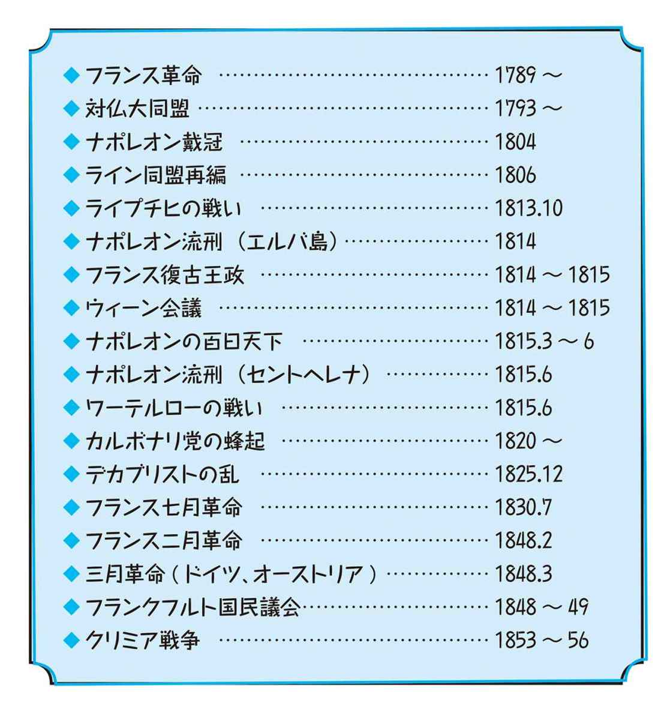
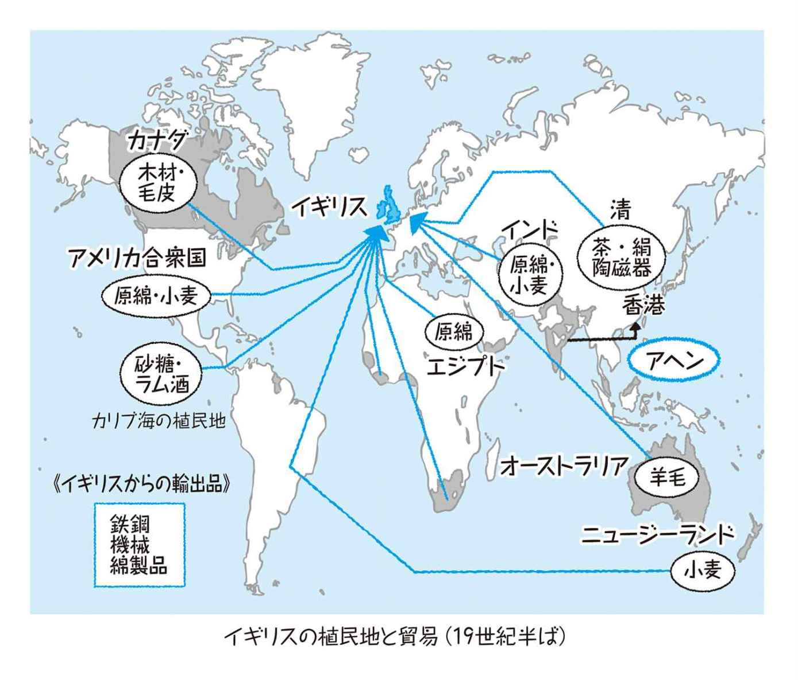
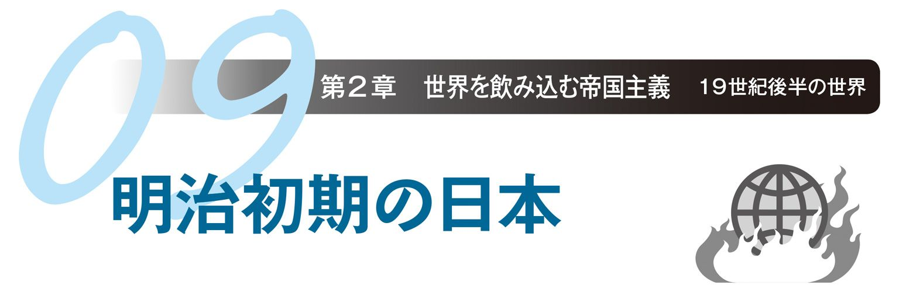
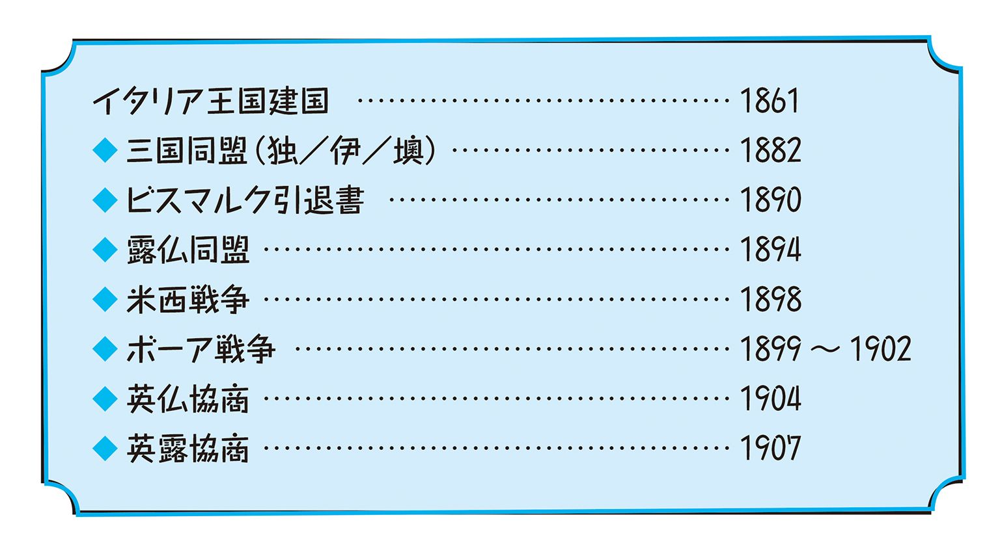
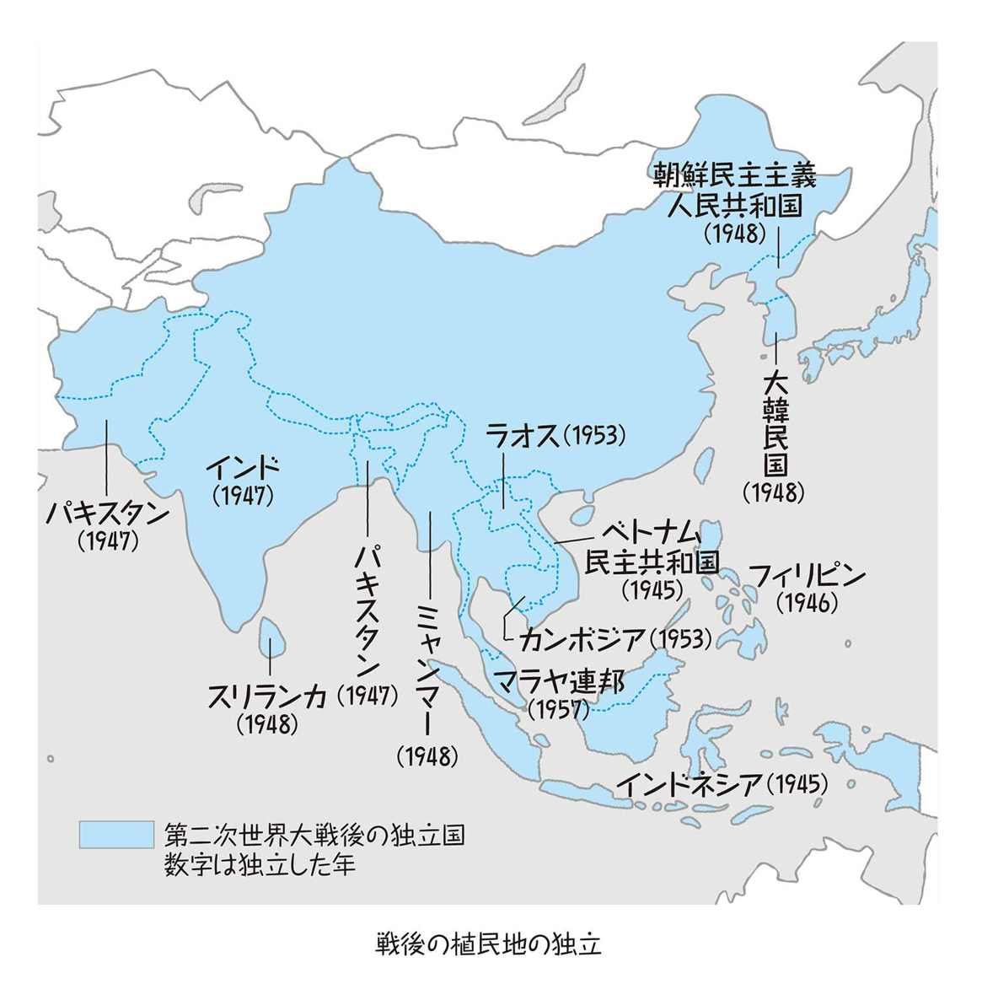
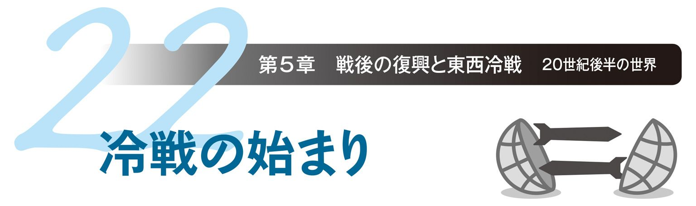
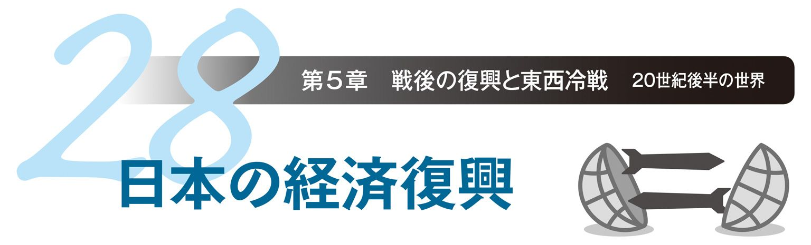

| おとなの楽習 (19) 現代史のおさらい | |
| 土屋 彰久 & 山田 淳一 | |
| (2016) | |
近代ってなんだろう？
近代？近代？ピンとくるようなこないような。時代の区切りはなんとなくわかるけど、なぜそこで区切れるのか説明してみろと言われると、あとの言葉がなかなか出てこない。そんな感じではないでしょうか。無理もありません、それが当たり前です。なぜなら、どこに視点を置くかで、近代の区切りも変わるからです。近代は、様々な歴史の要素の集まりです。ですから、一言で言えないのも、イメージがはっきりしないのも、当然といえば当然の話です。でも一方で、それぞれの要素はてんでバラバラに存在しているわけではなく、それぞれが他の要素と密接な関係をもって結びついてもいます。だからこそまた、こうした諸々のものをひっくるめて、「近代」と言えるわけです。
まず政治の側面から見てみると、近代は「国民の時代」です。これは、政治の単位が国民国家に移ったこと、そして革命を経て国民が政治の主役になったことの二つの意味を持っています。それは同時に、身分制度に守られた封建制の終わりであり、平等の時代の始まりでもありました。経済的には、「産業革命と工業化」が近代のポイントです。その環境を整えたのは、農業生産の拡大に支えられた商品・貨幣経済の発達で、これは市民革命の担い手となる都市民の成長にもつながりました。文化の面ではルネサンスと宗教改革が近代への転機でした。ローマ教会という絶対的権威の精神支配から解放された西欧の人々は、様々な方向に、自由にその活動を発展させていきました。経済の発展を支えた技術革新は、このような自由の気風の中で生まれていきました。また、ローマ教会の一元的支配の構造が崩れると、ローマ教会を頂点とする封建制の秩序も揺らぎ、国民国家の成立も促されました。
一方、世界に目を向けてみると、それまで地理的に離れて小規模な通商でつながっていたそれぞれの地域世界が、航海技術の発達で西欧先進国の版図に組み入れられるようになり、力ずくではありますが、西欧中心の「一つの世界」が地球全体をカバーするようになりました。一方、その版図に飲み込まれた側から見れば、近代化は西欧による一方的な侵略でしたが、この構図自体は西欧で起こったことの繰り返しでもありました。西欧では、他に先駆けて近代化を果たしたのはイギリスでしたが、西欧に力ずくで近代化の波を広げたのはフランスのナポレオンでした。ナポレオンの隆盛自体は短く、一度は征服された諸国もほどなく独立を回復しましたが、西欧全域を席巻したこの近代化の嵐が去った後、各国はさらに近代化を進め、今度は西欧全体が世界の征服に乗り出していきました。当時の世界では、専制が招いた長年の停滞の下で変化のエネルギーが静かに蓄積していました。世界をこのエネルギーを溜め込んだ爆弾と見るならば、西欧はその信管、そしてその信管の炸裂がナポレオン戦争でした。ここからが、本格的な近代の始まりです。
『現代史のおさらい』もくじ
第１章
19世紀前半までの世界
第２章
19世紀後半の世界
第３章
20世紀前半の世界
戦争の発端・サラエボ事件／戦火拡大の導火線／植民地拡大の行き詰まり／東方問題と世界の火薬庫／国民国家の戦争／帝国主義と民族主義／国力の全てが戦場に／同盟国と連合国／長期化する戦争／ドイツとオーストリアの降伏／古き帝国の滅亡／第一次大戦の新兵器
第４章
20世紀半ばの世界
第二次大戦開戦／枢軸国と連合国／レジスタンス（抵抗）運動／ヨーロッパ・北アフリカ戦線／アジア戦線／アメリカの参戦／植民地の生産力／第二次大戦の新兵器／核兵器の誕生／劣勢となる枢軸国／第二次大戦終戦／平和に対する罪／戦後の植民地独立
第５章
20世紀後半の世界
ヨーロッパを席巻した市民革命の嵐は、ナポレオンの敗北で一区切りとなりました。最終的に戦争に勝利した周辺諸国の側も、社会全体が大きな影響を受け、その後の近代化につながっていきました。
◆ナポレオン戦争の旋風
ナポレオン（1769～1821）は、もともとはフランスの下級軍人でしたが、フランス大革命という動乱の時代に、革命政府側に残って戦功を挙げ、若くして将軍となりました。さらにその後、政治においても優れた手腕を発揮し、革命後の混乱を収拾して国民の支持を集め、フランス皇帝（在位1804～14、1815）となりました。
これに対して、革命の波及を恐れる周辺諸国は、イギリスを中心にたびたび対仏大同盟（1792～1815）を結んで干渉を強めました。対するフランスは革命体制の防衛のため、ナポレオンの指揮の下で団結してこれに対抗し、ナポレオン戦争（1803～15）が始まります。軍略に優れたナポレオンは、連戦連勝で対仏大同盟の包囲網をことごとく破ると、国内の体制を固めるとともに攻勢に転じ、周辺諸国を次々に征服していきました。
こうしてナポレオン戦争も後半になると、対仏大同盟への抵抗というよりフランスの覇権拡大戦争としての性格を強めていきました。最盛期には、フランスの版図は西欧のほぼ全域にまで及びました。
◆ナポレオン敗北
陸上戦では、向かうところ敵なしのナポレオンでしたが、海戦は不得手で、対仏大同盟の中心であるイギリスには手出しができませんでした。また、イギリスと結んだロシアを深追いして大陸側の戦いでも手痛い敗北を喫すると、これに乗じた周辺諸国の攻勢を受け、ライプチヒの戦いに敗れたナポレオンはエルバ島に流刑となりました。
その後、フランスの復古王制（ルイ18世、在位1814～1815、1815～1824）があまりに不人気であったこともあり、ナポレオンはクーデターによって再び政権の座に返り咲きます（百日天下）。しかしワーテルローの戦いに敗れて再び流刑となり、ナポレオンの時代は終わりました。
◆ウィーン会議
ナポレオンという嵐が去った後の西欧を、それ以前の状態に戻そうということで開かれた国際会議がウィーン会議（1814～15）です。ナポレオンは、西欧のほぼ全域を支配下に納めただけでなく、1806年に神聖ローマ帝国を完全に解体して、親仏政権を西南ドイツの各国に作らせてライン同盟（1803～16）として再編するなど、国政にも手を入れたため、元に戻すのはなかなか大変でした。
この会議がウィーンで開かれたことにも象徴されるように、会議を主導したのは、イギリスと並ぶ対仏大同盟の中心国であったオーストリアの宰相メッテルニッヒ（1773～1859）でした。この会議の結果、西欧に再構築された国際秩序がウィーン体制（1814～48）です。
◆ウィーン体制下の平和
ウィーン体制の主眼は、新たな社会変動である市民革命の動きを封じ込め、旧来の君主主権の体制を守ることにありました。この点においては、それまで互いに領土をめぐって争いを続けていた列強の君主国も利害が一致しており、領土の拡張よりも大国間の協調が優先されました。
こうして西欧は、大国が互いの支配権を尊重する形で割拠し（正統主義）、また革命的な動きを協力して封じ込める（反動政策）ことで、しばらく安定した状況が続きました。正統主義と反動政策の二つが、ウィーン体制の大きな特徴です。
◆くすぶる反乱と革命
ウィーン体制は、民主化という歴史の大きな流れに抗いつつも、メッテルニッヒら反動政治家の手腕と大国の軍事力を頼みに、つかの間の安定を西欧にもたらしました。しかし、経済面ですでに進んでいた産業革命は、労働者階級という新たな階層を生み出し、自由と権利を求める新興勢力を質・量ともに強化しました。
イタリアのカルボナリ党の蜂起、ロシアのデカブリストの乱（1825）、あるいは大革命の経験をもつフランスの七月革命（1830）などの自由主義的な運動・革命が相次ぎ、ウィーン体制は揺らぎ始めます。また、列強の支配下に組み入れられていた諸邦を中心に、民族主義の動きも活発化していきます。民族主義とは、民族の独立や利益を守ることに重要な価値を置く思想運動です。
◆1848年
1848年は、西欧の歴史の分水嶺となった年でした。この年の二月、まずフランスで二月革命が起こり、国王は亡命、第二共和制（1848～1852）が成立します。これに刺激された革命の動きは西欧全体に広がり、オーストリアとドイツでは三月革命が起こります。

ドイツでは、民族主義の影響もあってドイツ統一の動きと重なり、立憲君主制の下でのドイツ帝国の統一を目指してフランクフルト国民議会が開かれました。しかし、最初から共和制（＝王制の廃止）を目指さなかったという中途半端さに加え、自由主義的な憲法を嫌ったプロイセン王（フリードリッヒ・ヴィルヘルム４世）に戴冠を断られて勢いを失い、革命は頓挫してしまいました。
オーストリアでも、革命自体は、諸邦の独立運動とともにロシアの介入もあって最終的には鎮圧されました。革命がオーストリア全域に拡大していく過程で、ウィーン体制の立役者であるメッテルニッヒは失脚して亡命し、一つの時代が終わりました。
◆ウィーン体制崩壊
二月革命と三月革命が起こった1848年を境に、国内の様々な要求を抑えられなくなった列強諸国は、協調体制の維持も困難になりました。そして、列強は1853年にクリミア戦争で衝突し、ウィーン体制は完全に崩壊しました。
ウィーン体制の動揺は、列強の植民地に対する影響力を弱めました。いち早く独立したアメリカ合衆国に続き、ラテン・アメリカ諸国も次々と独立を果たしました。
◆アメリカ合衆国の礎
1776年の独立当初、アメリカはまだ今日のような強大な国家ではなく、体制も安定にはほど遠い状況にありました。しかし、国家防衛の上からも国内の政治体制を固める必要性は皆が理解しており、議会での討論を重ねて合衆国憲法が制定されました（1787）。
アメリカはもともとが州の連合体であったために、連邦制を採用しましたが、連邦政府にどれだけの権限を認めるかについては、対立もありました。しかし、大統領選挙において連邦派と反連邦派の間で平和的な政権交代を経験し、イギリスとの再度の戦争（米英戦争）などもあって、国内はまとまっていきました。
◆領土と生産力の拡大
イギリスと戦った独立戦争当時（1775～83）、アメリカはフランスから支援を受けたこともあって、革命を経てナポレオンの時代になっても米仏関係は良好でした。これはまず、フランスからのルイジアナ買収という形でアメリカの領土拡大につながります。
次いで、ナポレオンの大陸封鎖令（フランスの同盟国にイギリスとの通商を禁止）に対抗して、イギリスが逆封鎖令を出したことから対仏貿易を邪魔されるかたちになり、イギリスから圧力が続いていたこともあって、米英戦争（1812～14）に発展します。この戦争自体は、両国それぞれの都合もあってある程度の段階で講和になりましたが、アメリカにとっては、イギリスからの工業製品の輸入が途絶えたことで、国内の生産力を強化する結果となりました。
また、米英戦争ではインディアン（ネイティブ・アメリカン）はイギリスと組んで戦いました。そのため、インディアンをさらに西に追いやって領土を拡大していく上でも、この戦争は好都合でした。
◆アメリカ型民主政治
アメリカは、常に西部に開拓地を抱えており、また入植者を広く受け入れて農地の払い下げを行っていたため、貧しい人々でもある程度努力すれば独立自営農民となることが可能でした。これは、もちろん先住民たるインディアンの犠牲の上に成り立っていたことでしたが、農村から追い出された零細農民が労働者として都市に流れ込むほかなかったヨーロッパとは事情が大きく違っていました。こうして新たな自営農民が増えていくにしたがって、その要求を受けて選挙権が低所得者にも拡大されていきました。
そのため、アメリカではヨーロッパに先駆けて、所得による制限のない普通選挙が普及し、草の根の民主政治が定着しました。ただし、それは白人男性の中での話で、奴隷制度やインディアンの迫害は続いていましたし、女性の選挙権は逆にヨーロッパよりも遅れて認められました。
◆ラテン・アメリカ諸国の独立
ウィーン体制が動揺してくるにつれ、ヨーロッパ列強の新大陸支配も弱まり、スペインの広大な植民地であったラテン・アメリカ地域でも独立運動が高まります。近代初の黒人主体の国家として、フランスからの独立を果たしたハイチ（1804）のような例もありましたが、大部分はスペイン領で、現地生まれの白人（クリオーリョ）が主導したものでした。この時期の革命家として名高いシモン・ボリバール（1783～1830）やサン・マルティン（1778～1850）などは、皆このクリオーリョでした。
◆独立の裏にある思惑
ラテン・アメリカ諸国は、自分たちの力だけで独立できたわけではなく、アメリカやイギリスの支援を受けていました。これは、アメリカとイギリスがスペインの植民地を独立させることで、新たな市場として進出することを狙っていたためです。
特にアメリカは「モンロー主義」を掲げて、ラテン・アメリカを積極的に囲い込んでいきました。一般に孤立主義と理解されるモンロー主義の内実は、相互不干渉を原則としつつも、その境界線は大西洋に引く、つまりヨーロッパでの争いには距離を置くが、ラテン・アメリカはアメリカの縄張りとして手出しはさせないというものでした。
中欧のドイツ語圏の主役は、長らくオーストリアでした。しかし、ビスマルクにより急速な近代化を果たしプロイセンがライバルとして現れ、力でその座を奪い取ります。
◆プロイセンの隆盛
プロイセンは、もともとはドイツに300ほどあった領邦の一つでした。しかし、動乱の歴史の中で近代化を進め、軍国主義政策で周辺地域を次々に併合して、19世紀前半のドイツ語圏ではオーストリアに次ぐ大国となっていました。
また、ドイツの北部を中心としていたため、ナポレオン戦争の際にもほとんど無傷で、他の領邦とさらに勢力に差がつきました。ウィーン体制の下では、ドイツは39の領邦・自治都市に分かれていましたが、プロイセンは一国で半分以上の地域を占めるに至っていました。
◆大ドイツ主義と小ドイツ主義
ナポレオン戦争以前は、ドイツ語圏の盟主はオーストリアであり、ハプスブルク家が代々、神聖ローマ帝国（800～1806）の帝位を継いでいました。しかし、ナポレオン戦争によって名目上の存在であった神聖ローマ帝国が完全に消滅し、他国の侵略にさらされたことで、ドイツ語圏でもゲルマン民族主義の機運が高まり、ドイツ統一を求める声が強まりました。これをふまえて、オーストリアは今までどおりのオーストリア中心の統一体制の再構築を考えました。これが「大ドイツ主義」です。
プロイセンはこれに対して「小ドイツ主義」を唱え、支配下に多くの非ドイツ語地域を抱えるオーストリアを除いて、プロイセンを中心としたドイツ語圏に限定した統一を模索します。この通り 「小」とはいっても、プロイセンにとっては管理可能な限りで目一杯の拡大を図った拡張策でもありました。
◆鉄血宰相・ビスマルク
この時代のプロイセン、ドイツを通じて、最も大きな政治的役割を果たした人物がビスマルク（1815～98、首相在任1862～90）です。
ビスマルクはユンカー（ドイツの地主貴族）出身で、「鉄血演説」や「アメとムチ」の政策などで有名です。鉄血演説というのは、「鉄でできた兵器と兵士の流す血」で勢力の拡大を目指すべきとしたプロイセン首相時代の議会演説で、プロイセンはこの鉄血政策を貫いて、ドイツ統一を果たしました。またアメとムチの政策は、産業革命の進行で貧困問題が深刻化したドイツで、社会福祉政策（アメ）を採る一方で、労働運動の取り締まり（ムチ）を強化したものです。こうした現実主義的で柔軟かつ果断な姿勢から、国益至上主義的な保守系政治家に人気が高く、今日でも数多くの信奉者がいます。
◆ビスマルク体制下の安定
「鉄血宰相」の異名をとったビスマルクですが、単純に支配地域の拡大を目指したわけではありませんでした。ビスマルクは、基本的にはプロイセンがドイツをまとめた上で、そのドイツにとって有利な状況を実現し、安定化させることを目標に戦略を展開していきました。オーストリアとの普墺戦争（1866年）でドイツの盟主の座を奪い、フランスとの普仏戦争（1870～71）で資源の豊かなアルザス・ロレーヌ地方などを手に入れてからは、この状態を維持することに専心しました。
第一の課題はフランスの反撃を押さえ込むことでしたが、ドイツが突出して周辺国が一致団結してしまうことも危険と考え、それ以上の拡大政策は控えました。そして、オーストリアやロシアとの連携を図り、大国間の勢力を均衡させることで、ウィーン体制の崩壊で揺らいでいたヨーロッパに、再び安定をもたらしました。
「ビスマルク体制」というと、まるでドイツの国内の話のようですが、実際はこの時期の国際的な安定状況のことを意味しています。
◆ドイツ帝国の成立
ビスマルクは、普仏戦争での勝利を好機として、それまでプロイセン中心の北ドイツ同盟に参加していなかったバイエルンなどの南ドイツの諸邦も帰順させ、ドイツ帝国（1871～1918）を成立させました。ドイツ帝国はプロイセン王が同時にドイツ皇帝となる連邦制でしたが、成立以降は集権化が進みました。
最も早く市民革命と産業革命を果たしたイギリスは、その強みを最大限に生かして、世界各地に植民地を拡大していきました。
◆二つの革命と政治の安定
市民革命は、政治の民主化、自由化を進めるものですが、社会全体に大きな変化をもたらすために、体制を安定させるのは容易ではありません。イギリスでも、一回目のピューリタン（清教徒）革命（1641～49）では安定した体制はできず、二回目の名誉革命（1688～89）によって、イギリス型の安定した議会政治の基礎ができあがりました。
イギリスの議会政治は、枠組はそのままに、内容を少しずつ時代に合わせて変えていくことで、それ以前の絶対王制から現代型の民主制まで、切れ目なく時代の変化に対応してきました。名誉革命で、絶対王制の復活を目指した前王（ジェームズ２世）を追放したイギリス議会は、新しい王（ウィリアム３世とメアリー２世）を据えて、王制を維持しつつも実権は議会が握るという「立憲君主制」を確立し、行政も議会の信任に基づいて内閣が行うという「議院内閣制」を定着させました。
こうして国家権力を実質的に独占することになった議会ですが、この議会そのものについても、数度にわたる選挙法改正で少しずつ有権者を増やしていくことで、一般国民の不満を和らげつつ、議員構成の急激な変化を避けました。そのため、反体制勢力が大きくなることはなく、議会の権力基盤は安定しました。
◆資本主義の進展
名誉革命を経て、イギリスは政治的には自由になりましたが、経済面ではしばらく重商主義政策が続いていました。重商主義とは、国家が商業や貿易を保護し、貴金属や貨幣を蓄積することで国富を増大させることを目指す経済政策です。絶対主義の時代にはこの政策が採られていましたが、産業革命の進行によって生産が飛躍的に増え、また経済の規模も大きくなってくると、重商主義的な規制が逆に経済発展の足かせとなっていると意識されるようになりました。
こうした中で、経済学者で哲学者のアダム・スミス（1723～90）が提唱していた「自由放任」の経済政策が支持を集め、内外の規制が緩和・廃止され、管理貿易から自由貿易へと政策が転換されていきました。

経済の自由化が進むと、重商主義の時代にその恩恵を受けて資本の蓄積していた企業家層が資本家となり、内外で投資を拡大させました。イギリスは、産業革命によって手に入れた圧倒的な生産力と海軍力を武器に、世界にその工業製品の販路を拡大していきました。インドなどの植民地から原料を安く大量に仕入れ、本国の工場で製品を大量生産することで、植民地との間で垂直貿易を行うだけでなく、国際市場でも優位に立ちました。
一方、国内では自由放任政策の下、労働者の保護は顧みられなかったために賃金は低く抑えられ、資本家に多くの利益が集中しました。この資本は、さらなる利益を求めて再び投資に向けられるという「拡大再生産」の図式に乗って膨張を続け、資本の増殖プロセスを中心に経済が回る資本主義の経済体制ができあがっていきました。そしてイギリスは、一時は世界の工業生産の過半を占め、「世界の工場」とも呼ばれました。
◆日の沈まぬ帝国
イギリスは、市民革命以前のエリザベス１世の時代（在位1558～1603）にスペインを破って、海軍力では最強の国となっていました。この海軍力は、ナポレオン戦争の際にも大きな力となりましたが、それ以降の植民地獲得競争でも最大のよりどころでした。スペインの次にイギリスのライバルとなったのは、同じように海洋国家として植民地の拡大を進めていたオランダでした。
オランダは、一時はイギリスをしのぐ版図を誇っていましたが、ヨーロッパでは地続きの小国であったことが災いしてナポレオンに征服されます。それを好機と見て、イギリスは海軍力に物を言わせて、オランダの植民地を奪っていきました。そして植民地にはならなかった進出地域でも、海軍力をバックに露骨な圧力をかける「砲艦外交」で門戸開放を迫り、市場の開拓を強引に進めていきました。
こうしてイギリスは、人口と工業産品という本国から生じる二つの余剰の受け皿として、アジア、アフリカに積極的に植民地を拡大していき、かつての「日の沈まぬ帝国」スペインをしのぐ大英帝国を築き上げました。
西欧の列強は、ビスマルク体制の下、列強同士で争う愚を避け、まだ開拓途上だった世界地図の下方向（アフリカ）と右方向（アジア）への進出を加速させます。そして、最後に残ったのが中国でした。
◆「眠れる獅子」の実体
清（1616～1912）は、満州族が前代の明（1368～1644）を倒して打ち立てた王朝でした。清は、漢族が大多数を占める中国を治めるために、硬軟両様の政策を合わせて支配体制を固めていきました。
しかし、体制が安定すると腐敗が広がるのは、いつの時代でも同じことで、18世紀頃に迎えた最盛期を過ぎると、清の体制には様々なほころびが目立つようになりました。それでも清ほどの大国になると、盛時の余力はかなり長持ちするのも事実で、反乱や暴動は増えましたが、そのつど鎮圧されていました。
列強も、中国を「眠れる獅子」と見て、下手な手出しはしませんでした。また中国は、「中華思想」という言葉にもあるように、自国を世界の中心と考える思想が王朝周辺に強く、基本的に諸外国を見下していました。支配階級にしてみても、その贅沢を支える物資に不足はなく、外国との通商には消極的で、ほぼ鎖国に近い状態でした。そのため、中国内部には外国からの刺激がなかなか届かず、旧態依然の体質が残り続けました。
◆イギリスのアヘン貿易
当時の欧米にとって、その体制が古かろうと、茶・絹・陶器といった中国の特産物は、交易品として大きな魅力がありました。そのため列強はこぞって中国との交易を求め、競争に勝ったイギリスがその権益を手に入れました。
しかし、イギリスには中国にとって魅力的な交易品がなかったため、18世紀後半の収支は完全な赤字でした。そこで、この貿易赤字を解消すべく用意された交易品がアヘンでした。アヘンは、現在では世界で禁止されている麻薬ですが、当時はイギリスの植民地となっていたインドの特産品でした。一度覚えるとやめられなくなるというアヘンの中毒性を知り尽くしたイギリスは、このアヘンの中国への売り込みを図りました。
イギリスの積極的な売り込みでアヘン中毒が国内に広がると、清朝政府はアヘンの輸入を禁止しましたが、イギリスは密輸商人と結託してアヘンの密輸を続けます。そして、禁輸令以降も続いたアヘン問題の悪化に業を煮やした清朝政府は、イギリス商人の持ち込んだアヘンを没収して処分するという強硬措置をとり、イギリスがこれに対して賠償を迫り、ついにアヘン戦争へと発展しました。
◆アヘン戦争
イギリス本国では、このような不正な戦争に対する反対も強かったのですが、結局これを利権拡大の好機と見るパーマストン外相の主戦論が優勢となり、議会は僅差でイギリス軍の派遣を承認しました。また清朝側は状況認識の甘さから賠償交渉を決裂させ、開戦となりました。
近代的装備で万端の準備を整えたイギリス軍に対して、清朝側は兵士の数でこそ勝っていたものの、装備、軍規、士気、いずれも大きく劣り、連戦連敗で敗走を重ねました。そしてイギリスは全ての要求をのませて南京条約（1842）を結び、多額の賠償金や５港の開港、香港割譲などの戦利を得ました。
◆アヘン戦争ふたたび
アヘン戦争では完敗しましたが、この段階では清はまだ決定的に弱体化していたわけではありませんでした。一方のイギリスも、清に対する優位は確保しつつも、まだまだ目論見どおりに中国をイギリスの草刈り場にするには至っていませんでした。そこで再度の開戦を狙っていたところ、1856年、清朝政府がイギリス船内で海賊を逮捕するというアロー号事件が起きました。
当時、ヨーロッパで外国人排斥の機運が高まっていたこともあり、ここから事態が拡大します。今度は英仏が共同で清に宣戦し、アロー戦争（第二次アヘン戦争）に発展しました。この戦争も、清朝側の完敗に終わり、さらに不利な北京条約を結ばされました。そして、これを傍観していた他の列強も、清の弱体化に乗じて同様の不平等条約を押し付けました。
日本は江戸時代を通じ鎖国をしてきましたが、列強の清への接近に捕鯨ブームも加わり、オランダ、清以外の外国船も日本近海に頻繁に現れるようになりました。
◆ラクスマン来航
17世紀から18世紀にかけ、イギリスでは二つの革命、アメリカでは独立戦争、フランスではフランス革命と、相次いで革命を経た近代化が進んでいました。
それと同時に諸外国は日本に興味をもち始めます。まず初めに日本に接近してきたのがロシアでした。1792年、嵐でアリューシャン列島に漂着した伊勢の船頭を送り届けに、ロシアの使節ラクスマンが根室に来航します。
このとき、ロシアは日本に対して通商（貿易）に加えて江戸湾の開港を求めてきます。しかし、これを拒否した幕府は江戸と蝦夷地の海防の強化を進めました。当時、ロシアはシベリア開発を積極的に行い、アメリカは西部開拓を進め太平洋に進出してきていました。そのため幕府は外国の接近を警戒していたのです。
◆ロシア＝アメリカ会社の攻撃
ラクスマンは長崎入港許可証を手に入れて帰国します。しかし、フランス革命の影響でヨーロッパの情勢が緊張状態に陥ったため、ロシアは日本から一時手を引きました。
再びロシアが使節を送ってきたのは1804年のことです。極東と北米で毛皮などの交易を行っていたロシア＝アメリカ会社のレザノフは東シベリア地方の物資不足に悩んでいました。日本との通商でこの問題を解決しようとロシア政府に提案し、自らが使節となって日本にやってきます。ところが期待と裏腹に日本から門前払いを受けたレザノフは、武力によって日本を開国させようと計画します。
この計画は皇帝の許可を得ることができませんでしたが、ロシア＝アメリカ会社の海軍士官によって、樺太・択捉が攻撃されました。
◆ゴローニン事件
ロシア＝アメリカ会社の攻撃があったものの、ロシア政府としては日本を攻撃したわけではなかったため、日本の対露感情が悪化していることにも鈍感だったのです。そのような状況で千島列島の測量に来ていたロシア軍艦の艦長ゴローニンと船員が、燃料を補給しようと国後島に上陸しました。彼らは警戒を強めていた日本の守備兵に逮捕されます。
ロシア側も船内に残っていた副艦長の指揮によって国後付近で日本船を襲って船主を捕虜にします。捕えられたのは商人の高田屋嘉兵衛でした。彼は択捉航路を開拓するなど、幕府と仕事柄の深いつながりがありました。そこで、高田屋の仲介によって拘留されていたロシア人釈放への交渉が始まり、結果的に艦長らは釈放されました。
その後、ロシア＝アメリカ会社も開発の主力をカリフォルニア方面へ移転したので、両国の緊張関係は正常化しました。
◆フェートン号事件
この時代、列強諸国では燃料やコルセットの材料として捕鯨が流行していました。19世紀初め、鯨の群れを追っていたイギリス船が日本の港にたびたび燃料や食糧を求めてきます。国交がなかったので海岸に面した諸藩は警備を強めていましたが、防衛費が高くなり赤字状態でした。
そこにイギリスのフェートン号が乱入したことで状況はさらに悪くなります。これは、軍艦フェートン号が当時敵国であったオランダ船を追って長崎に侵入した事件です。燃料と食糧を要求した後に退去しますが、その後も英米船の日本海域への出没や物資の要求は続きました。
◆モリソン号事件
外国船が相次いで日本に接近してきたために、幕府としても法を整備して対応するようになります。
それが1825年に出された異国船打払令（無二念打払令）です。これは「外国船が接近してきたときは迷わず砲撃せよ」という命令です。それでも上陸してきた場合には捕まえるか、場合によっては殺害も許可していました。
幕府としては鎖国体制を継続しつつ、外国とのトラブルをこれ以上起こさないための策でした。しかし、この命令は逆に問題を悪化させてしまいます。アメリカの商船モリソン号が、日本人の漂流民を送還しつつ貿易の交渉をするために鹿児島湾や浦賀沖にやってきましたが、この異国船打払令があったために砲撃を受けて引き返すという事件が起こったのです（モリソン号事件）。
これに対して国内の学者から批判の声が上がりますが、幕府は彼らを逮捕、投獄すること（蛮社の獄）により鎖国を貫こうとしました。
諸外国からの度重なる圧力に、幕府は鎖国の継続を諦めて開国を決断しました。そして国内では、倒幕の気運が盛り上がります。
◆清の敗戦が与えた影響
清がアヘン戦争でイギリスに敗れたことは日本にも影響を与えました。それまでオランダ・清以外の外国船に対して入港を許さない態度をとり続けてきた幕府でしたが、列強の脅威に態度を緩和させます。
寄航した外国船には燃料、食糧を与えて返すという薪水給与令が出されました（1842）。しかしそれでも、広く海外と貿易を行うために開国するということはありませんでした。
アメリカも、清との貿易に加えて日本近海での捕鯨活動に力を入れたいと、積極的に日本に開国を促していました。鯨油はろうそくに利用され、髭はコルセットの材料となったのです。そのような理由からアメリカ東インド艦隊司令長官のビッドル（1783～1848）が日本に来航して通商を要求しますが、幕府は従来のとおり、これを拒否しました。
◆黒船来航
列強諸国、そして自分の母国アメリカの交渉の失敗を見たペリー（1794～1858）は日本を開国させるためには紳士的な手段に頼っていてはうまくいかないと判断しました。
1853年、ペリーは東インド艦隊司令長官として軍艦４隻を率いて浦賀沖に来航し、軍事力をちらつかせて渋る幕府にむりやり開国を要求します（1853）。幕府は１年後の回答を約束し、ペリーも了承しました。また、ペリーは帰り際に琉球に寄って琉球王国との自由貿易も承諾させました。
そして翌年、彼は幕府から回答を得るために今度は７隻の軍艦を率いてきました。軍艦の数は、もちろん幕府に圧力をかけて開国させようという態度の表れです。大砲と軍艦で脅しをかけて交渉するということで、これは典型的な砲艦外交でした。
◆開かれた日本
アメリカの圧倒的軍事力を前にした幕府は、1854年に鎖国政策を一部転換、日米和親条約を結びます。これまでも薪水給与令によって燃料と食料は供給してきましたが、それに加えて、下田・函館を開港してアメリカ領事の駐在を認め、アメリカに片務的な最恵国待遇を与えることを約束しました。
最恵国待遇とは、日本が別の国に対してアメリカよりも良い待遇を与えた場合にはアメリカは自動的に同じ待遇を得るというものです。片務的ということは、日本はアメリカにこの待遇を約束するがアメリカは日本に同様の待遇を約束するものではないということでした。
日本はイギリス、オランダ、ロシア、フランスなどとも同様の条約を結びました。ペリー来航によってそれまでの鎖国政策が一気に様変わりし始めたのです。
◆貿易の自由化
むりやりともいえる手段で開国させられた日本でしたが、まだ貿易の自由化は認めていませんでした。アメリカは日本を清との貿易における中継地点として考えていたので、ペリーも文字通りの「開国」を最優先として通商の強要まではしませんでした。
しかし開国後、初代アメリカ総領事として下田に赴任してきたハリス（1804～78）は、通商を要求します。これに対する朝廷や幕府の反対派の抵抗から、交渉は難航しました。ところが、清がアロー戦争に敗れると、幕府はイギリス、フランスに対する脅威からアメリカとの間に日米修好通商条約を締結します。
その中身は、まず新たな開港と貿易の自由化を認めるというものでした。さらに関税については相互の協議によって決定するとされました（関税自主権の欠如）。
また、開港地に外国人のための居留地を設け、仮に外国人による犯罪が起きたとしても、日本ではなくアメリカの法で裁くことを認めました（治外法権）。この条約は不平等条約だったといえます。
◆盛り上がる倒幕運動
外交問題でアメリカに屈服するかたちになってしまった幕府はそれまでの独裁路線からの修正を図ります。朝廷との結びつきを強くして国内に対して権威を示そうという、いわゆる公武合体路線へと舵を切ったのです。
14代将軍家茂（1846～66）は孝明天皇（1831～67）の妹と結婚することで朝廷と縁を深めます。しかし同時に、異国を嫌う天皇、朝廷から外国との通商関係を打ち切るように迫られました。ペリー来航以来、すでに鎖国から開国へと政策を転換していたので、幕府はこの約束を果たせませんでした。
さらに、幕府の後ろ盾でもあった孝明天皇が亡くなると、薩摩・長州といった有力諸藩が手を組んで倒幕活動を活発化させていきます。
◆江戸時代の終焉
倒幕運動の活発化に対して、1867年、幕府は政権を朝廷に返還します（大政奉還）。幕府自身もすでに日本全国をコントロールするだけの力がないことは自覚していました。表向きの日本の代表を朝廷とすることで、国内の不満をそらせることが狙いでした。
しかし、大政奉還の狙いは朝廷をトップとする政権の中で、なお徳川家が中心として君臨することでした。それに反発する朝廷の倒幕派や薩摩・長州によって武力倒幕が進められます。
薩摩・長州を中心とする連合軍によって江戸城から徳川家が追放され、明治天皇を頂点とする新政府が樹立されます。この後も東北の同盟軍が新政府軍に反抗したことで、内戦は一年以上続きます（戊辰戦争）が、こうして260年間に及ぶ徳川家による支配は終焉を迎えました。
西欧の列強を中心に世界が回っていく一方で、その東方に位置する半亜半欧の二大国もまた、それぞれに近代化の道を模索していました。
◆オスマン・トルコの隆盛
イスラム王朝の世界帝国、オスマン・トルコ（オスマン帝国、1299～1922）は、中世から近代を通じ、西欧世界にとって最大の脅威でした。しかし、16世紀以降の宗教改革を経て、西欧の側でローマ教会の一元的支配が崩れると、キリスト教世界とイスラム教世界の排他的対立の構図は弱まり、西欧諸国はトルコとの連携も視野に入れるようになりました。
これに対し、十分な版図を手に入れていたトルコの側も、単純な侵略よりも戦略的な交流を通じて、西欧世界への影響力を強める方針を採り、西欧との交流の基盤ができあがりました。こうして拡大した両世界の交易を通じて、東西の文化交流も進みました。トルコの側では、もともとが多民族国家として多様な文化を受け入れる素地があったことから、西欧世界からの刺激を受けて、社会の様々な面で欧化が進んでいきました。特に、北方のロシアが新興の大国として南下の圧力を強めるようになると、これと対抗する上でも西欧の先進的な制度や技術を積極的に取り入れる必要性が強まり、欧化に拍車がかかりました。
◆衰勢と民族主義の仲張
17世紀頃の盛時には大帝国として繁栄を誇ったオスマン・トルコでしたが、その繁栄と支配体制の安定は、当然の結果として支配階級の堕落を招きました。そして、この支配階級が既得権益を守ろうとしたため、内政でも軍事でも、様々な場面で近代化の障害となりました。
これは、近代化が急速に進行した産業革命の時期に特に顕著となりました。国内では、西欧の市民革命以降強まる一方だった分離独立などの民族主義運動に悩まされ、国外では経済力と軍事力を急速に高めた西欧列強の圧力にさらされながらも、政府には適切に対処する能力がありませんでした。そして、長らく支配下に置いていたバルカン地方でギリシャの独立を許すこととなり（1832年）、トルコの弱体化は誰の目にも明らかとなりました。
◆ロシアの近代化
ロシアは、地理的には国土の大部分がアジアですが、国家の中枢はヨーロッパ寄りの西側にあり、支配階級の文化もヨーロッパ文化でした。ただし、ロマノフ王朝は東ローマ帝国の継承者を自任していたようにロシア正教を国教とし、カトリックが共通の基盤だった西欧とは一線を画していました。また民族的にもロシアはスラブ人が主で、ケルト・ラテン・ゲルマンが主の西欧と異なっていたことから、西欧からは東欧の辺境の後進国として扱われていました。さらに統治制度も農奴制を基本とする前近代的なものでした。
ロシアの近代化に大きく貢献したのは、ピョートル１世（在位1682～1725）、そしてエカテリーナ２世（在位1762～96）です。ピョートル１世は身分を隠して西欧諸国を旅行するなど、先進的な文化、技術の吸収に努め、上からの改革を強力に進めました。そして、北方戦争（1655～61）など周辺諸国との戦争でも勝利を重ね、シベリア開拓なども進めて国土を拡げ、ヨーロッパ国際社会の一員に加わりました。エカテリーナ２世は、啓蒙専制君主の一人として、社会システム全体の近代化をさらに推し進め、後の産業革命の素地を整えました。ただし、社会構造と密接に結びついた農奴制の改革は遅れ、ロシア政治特有の後進性と急進性の基底として残りました。
◆ロシアの急進的な政治運動
ロシアは、一般国民の大半を農奴・貧農が占めており、アレクサンドル２世（在位1855～81）の農奴解放令当時（1861年）で、人口の約80％が農民、その約半数が領主に隷属する農奴でした。そのため、民主化の担い手となるような中間層（労働者層）が欠けたまま、西欧の先進的な思想に触れた知識人や下級貴族の主導で、一般国民から離れた急進的な運動が展開されることになりました。
◆ロシアとトルコの関係
ロシアとトルコは、大国同士が長い間国境を接していたという事情から、16世紀から両帝国が滅亡する20世紀初頭までに、実に12回も戦争をしました。戦争の原因は、オスマン・トルコの勢力が強かった18世紀頃までは、トルコの拡張政策が主でした。しかし、トルコの勢力が衰える一方でロシアが国力を伸ばした後半は、不凍港（冬でも海面が凍らない港）を求めての、ロシアの「南下政策」が大きな要因となりました。
◆南下政策とクリミア戦争
露土戦争の11回目に数えられているのが、最も有名なクリミア戦争（1853～56）です。黒海北岸にあるクリミア半島が主戦場となったことからこのように呼ばれていますが、実際の戦争はそれぞれに同盟国が参加したために広い範囲に広がりました。
元は、民族主義の気運に乗ってトルコ支配からの独立を図るバルカン半島のスラブ人の国々を、ロシアが汎スラブ主義（スラブ民族の連帯を目指す思想運動）を掲げて支援したことが発端でした。しかし、ロシアもこの機に乗じて南下を図る意図は明らかだったため、これを警戒した英仏はトルコ側について参戦し、大戦争に発展しました。
戦況は、近代化された英・仏軍と旧態依然のロシア軍、そしてさらに遅れたトルコ軍の差をまざまざと見せつけるものでしたが、結局、それぞれの国内事情に引きずられて、勝敗ははっきりと決しないまま講和となりました。

明治政府は江戸時代までの統治形式を改め、現代日本の基礎をつくりました。首都が東京に移され、廃藩置県が行われます。
◆維新の意味
維新の「維」という字は強調の意味合いをもち、「維新」をやさしい表現に訳すと「新しくしたぞ」となります。徳川家が支配していた江戸時代から、天皇中心の政治を行う明治時代に大きく変わったということを示すために、「明治維新」という言葉が一般的に使われるようになりました。
時代は確かに江戸から明治に変わりました。しかし徳川家から薩摩や長州といった地方の藩出身の武士に権力が移ったのであり、まだ武士の世の中が終わったとはいえませんでした。
維新志士というと大久保利通（1830～78）や西郷隆盛（1828～77）、坂本龍馬（1836～67）などの名前が挙げられます。しかし、大久保や西郷らは明治政府の中でも政権の中心にいたものの下級武士だったので、政権の代表になった場合に従わない者も数多く出てきかねません。そこで、貴族の三条実美を右大臣（後に太政大臣）として表向きの政権担当者とし、彼らはブレーンとして活躍していたのです。
◆神に誓った五箇条の御誓文
明治政府は天皇が神に誓うという形で日本の方針を示す「五箇条の御誓文」を発表します。ここには開国して世界に目を向けることや公議世論を尊重することが掲げられていました。
起案の段階ではこの御誓文は天皇が諸侯（藩主）と互いに誓い合う形で発表されることを予定していました。しかし天皇と諸侯が対等な関係ではいけないということで、諸侯にではなく、神に向かって誓う形式に改められました。
また「五榜の掲示」によって国民の守るべき基本事項を発表します。これはキリスト教の禁止や道徳の尊重など、主に江戸時代からの決まりを受け継いだものでした。
◆首都を東京へ
それまでの日本の首都は京都でしたが、江戸を鎮圧した明治政府は名称を「東京」と改めて、首都も変更します。東京遷都はスムーズに決まったわけではありませんでした。京都を首都のまま維持せよという意見はもちろん、「大阪遷都論」、京都と江戸の両方を首都とする「両都論」など意見が割れていました。しかし最終的には、戦乱が続いている東北地方に対する睨みや、経済・外交上の利点を考慮して東京を首都とすることで落ち着きます。
また、これまで頻繁に変更されていた元号も、一代の天皇につき一つの元号を定めることになりました（一世一元の制）。
◆明治政府の中央集権
明治政府は中央集権体制、つまり政府の権力強化を目指していました。そのためにまず、国家の基礎である「土地」と「人」が天皇のものであるということを示したのが版籍奉還です。「版」は土地を指し、「籍」は戸籍、つまり人を意味します。
各藩主は、一度返した版籍は再び天皇から自分たちに与えられるものだと信じていました。ところが実際は藩主達に再び土地と藩が与えられることはなく、彼らは知藩事として、もとの土地を管理する役割を与えられ、藩主時代と比べて大きく権限が制限されます。
さらにその後、藩が廃止され府・県が置かれると（廃藩置県）、知藩事であった彼らは罷免され、府知事・県令と呼ばれる役人が中央政府から派遣されました。
江戸時代は各藩にそれなりの権限が認められ、ある意味で地方分権色の強い体制だったといえます。しかし、新政府はそのような体制を一新して中央に権限を集中させることを目指していました。
幕末に弱体化していた江戸幕府のようにならないためという理由もありましたが、新政府は中央が権力を握ることで国が一丸となって外国に対抗できると考えていました。
明治政府は東アジアにおける日本の優位性の確立を目指しました。また、国内では憲法が制定され、議会が開設されます。
◆清・琉球王国との関係
1871年、明治政府は清との間に日清修好条規を締結します。相互に領事裁判権や領事を駐在させることを認める内容であり、日本にとっては開国後、初の対等条約でした。 しかし、欧米列強に追いつくことを目指していた日本はこの対等条約に不満であり、条約を批准するまでにはさらに時間を要しました。
一方で、当時、清と日本の両方に帰属していた琉球王国を正式に日本の領土とするために琉球藩に改めさせます。それまで、琉球は形式的に清の領土であり、実質的には薩摩藩の支配を受けていました。明治政府はそれを名実ともに日本の支配下に置こうとしたのです。
しかし清はこれを認めず、琉球は不安定な状態に置かれます。台湾での琉球漂流民殺害事件、それに続く日本政府の台湾出兵などを経て琉球への影響力を強めた明治政府は、廃藩置県を琉球藩にも行い、沖縄県としました（琉球処分）。
◆征韓論の盛り上がり
征韓論とは「韓国を征討する」、つまり、朝鮮半島へ攻め込めという主張です。
日本と朝鮮は、豊臣秀吉の朝鮮出兵の影響から、江戸時代を通して特殊な交流状態にありました。明治政府は新たな国交樹立を目指しましたが、江戸時代とは違った日本の態度に不信、不満をもった朝鮮はこれを拒否します。
西郷隆盛や板垣退助らは、明治政府発足以来、高まる士族・農民の不満を海外に向ける狙いから征韓論を唱え始めました。しかし、海外視察から帰ってきた大久保利通らの反対により征韓論は却下されます。西郷らは計画の挫折によって政府を去りますが、のちに明治政府は朝鮮領の江華島に測量のための船を接近させて朝鮮を刺激します（江華島事件）。
両国の戦闘に発展したこの事件で優位に立った日本は、朝鮮との間に日朝修好条規を締結することに成功します。これは日本の領事裁判権を認めさせ、朝鮮の関税自主権を認めないなどとする不平等条約でした。
◆南北の領土問題
幕末の日露和親条約（1855）によって、樺太については両国人の雑居を認め、千島列島は得撫島以北がロシア領、択捉島以南が日本領と定められました。
その後、明治政府は北海道の開拓を担当する開拓使に樺太の管理も任せ、一時は樺太買収も計画しますがうまくいきませんでした。政府内部からも樺太にこだわらない方がよいという意見が出始めます。そこで樺太に関する権利をすべてロシアに譲渡するかわりに、千島列島をすべて日本の領土とする樺太千島交換条約（1875）が締結されました。
また、当時、所属が不明確だった南方の小笠原諸島に関してはアメリカも関心をもっていました。ペリーが来航した際には父島に貯炭所の敷地を購入したほどです。しかし、日本が領有を宣言すると、修好通商条約においてすでにアメリカが有利であること、地理的にこだわる必要もないなどの理由から、特に問題にはなりませんでした。
◆西郷隆盛の西南戦争
新政府への不満は様々なかたちで出てきました。その一つが西南戦争に代表される武力による反抗です。
明治維新は地方武士による徳川政権の打倒でしたが、彼らは武士から士族となり、廃刀令などによって特権を奪われ、生活は困窮する一方でした。また、徴兵令が出され軍隊は国民全体の中から組織されるようになり、武力集団としての彼らの意義も奪われつつありました。
このような状況で、士族の期待の星であった西郷隆盛が下野すると地方で反乱が起き、1877年にはその西郷を中心に明治最大の内乱とされる西南戦争が勃発します。
戦争上手の西郷が鹿児島から攻め上ってくるということで日本中が大騒ぎになりました。しかし、洋式化を進めていた政府軍との兵器の質の差は大きく、西郷率いる軍は九州を出る前に鎮圧されてしまいました。
◆板垣退助の自由民権運動
武力による抗議とは別に、言論によって政府批判を始めたのが、板垣退助（1837～1919）らを中心とする自由民権運動です。
彼らは「民撰議院設立の建白書」を政府に提出して国会をつくることを要求します（1874）。五箇条の御誓文の中に「広く世の中全体から意見を集める」とあるので、まさに、そのための機関をつくってもらいたいということでした。新聞にも発表されたこの要求は世間に強いインパクトを与え、政府も無視することはできませんでした。
一方で、自由民権運動に対する締め付けも行われます。言論であっても大きな力となり得ることを感じた政府は「讒謗律」と「新聞紙条例」を制定します。讒謗律とはいまでいう名誉毀損罪に似たもの、また新聞紙条例は新聞・雑誌が民衆を扇動することを禁止した法律です。どちらも政府の言論統制のための法律でした。
◆国会開設の約束
政府の規制にかかわらず自由民権運動は盛り上がり続け、板垣退助は日本で初の政党・自由党を結成します。
政府内部でも、大隈重信（1838～1922）を中心とする派閥はイギリス型の議院内閣制を早期に導入すべきだと主張していました。しかし、一方で時期尚早として慎重な態度を譲らない伊藤博文を中心とする派閥も存在し、意見は分かれていました。
大隈は伊藤との争いに敗れ、政府を去ることになりましたが、政府は1890年に国会を開設する約束をしました。
大隈も立憲改進党を立ち上げ、板垣の自由党と政策で競います。しかし、政府が板垣ら自由党幹部の海外視察を援助するなど、政党の懐柔策を行い、運動の過激化にともなって自由党自体が支持を失い、自由民権運動はしだいに弱まっていきました。
◆内閣制度と憲法の制定
1885年、政府はそれ以前の太政官制を廃止して内閣制度を発足させます。初代内閣総理大臣には伊藤博文（1841～1909）が就任しました。
伊藤は憲法の制定に先立ってプロイセン憲法にならった憲法草案の作成を命じます。プロイセンをモデルとした理由は、その憲法が強力な君主権を認めていることにありました。日本においても天皇の権限を強化することで国内をまとめやすくしようとしたのです。
明治憲法（大日本帝国憲法）は天皇から国民に対して与えられる欽定憲法として制定されました。天皇は「統治権の総覧者」とされ、陸海軍の統帥権を掌握し、条約の締結権をもつなど、天皇大権と呼ばれる権限が定められます。つまり、国内の統治者としての側面と外交的側面の両面で、天皇が主権者であることを明確にしたものでした。
◆選挙と議会の始まり
1890年、日本初の衆議院選挙が行われ、帝国議会が開会されます。しかし、この選挙は財産、年齢、性別の制限が設けられていました。年齢では現在も制限がありますが、当時は「直接国税を15円以上納める25歳以上の男子」に限って選挙権が認められていました。有権者は富農、もしくは都市の上流階級に限られました。
また、衆議院とは別に貴族院も設立され、こちらは主に華族と天皇の直接の任命による議員（勅選議員）によって構成されました。貴族院によって衆議院の権限行使が制限される場面も少なくありませんでした。
産業革命の進展で、内需を大幅に上回る工業製品の生産力が生じました。各国は「領土」よりも「市場」を求めて、植民地の拡大に乗り出していきました。
◆なぜ植民地が必要か？
19世紀以前の帝国主義では、支配者は「領土拡張」に主眼を置いていました。もちろん、農業の時代には土地そのものが重要な財産だったので、その獲得に皆が血道を上げたのも当然です。しかし、市民革命を経た列強が始めた近代以降の帝国主義は新しいメカニズムで動いていました。
市民革命は経済活動の自由化につながり、それに産業革命による技術革新と生産拡大が加わることで、経済活動はより競争的になり、優勝劣敗が進みました。そして、貧富の差は以前よりむしろ広がり、わずかの富裕層（経営者）と大量の貧困層（労働者）に分化しました。
この状況では、経営者は低コスト（低賃金）で大量の製品を生産できましたが、低賃金の一般国民の側に購買力がなかったため、国外の市場に売るほかはありません。イギリス一国が世界の工場をやっている間はまだよかったのですが、フランス・ドイツ・ロシアも次々と産業革命を進めました。これは、イギリスで開発した技術、蓄えた資本を投資すればよかったので、さらに効率的に達成できました。こうしてヨーロッパ全体が過剰生産の状態になり、市場を求めて世界に出て行かざるを得なくなりました。
また植民地では、政治的な圧迫を加えることで、本国の製品を高く売り、植民地の産品を安く買うことができ、本国の生産コストだけでなく物価を下げることもできました。このように、国内の貧困層の不満を抑える上でも、植民地は重要な存在でした。
◆砲艦外交
列強諸国は、その軍事力と経済力を背景にアジアやアフリカに進出していきましたが、この時代には後進地域であっても、どこにも国家が存在していたので、形式上は国際法に則って「外交」というかたちでアプローチしていきました。ただ実際には、門戸開放を求めて不平等条約を迫り、これを断られると戦艦で砲撃を加えるといった強引なやり方が横行し、「砲艦外交」と呼ばれました。アメリカのペリーによる日本開国なども、その典型的な例です。
◆未開拓の世界へ
列強諸国の中でも、大陸側のフランスやドイツでは、当初はヨーロッパでの領土争いに関心が向いていました。しかし、こうしたヨーロッパ内部での争いを尻目に、イギリスなどが支配圏を拡大していくと、大陸諸国もこれに続くようになりました。こうした外への流れを促した要因としては、欧州内での領土争いを主導したドイツが一定の目標に到達して安定状態（ビスマルク体制）に移ったこと、そして産業革命の進行によって建艦能力が上がり、海外進出の基盤が整ったことがありました。つまり、同じ軍事力・経済力を投資するなら、「列強の陸軍同士で潰し合って、相手国の領土をむりやり支配下に置く」より、「丸腰の後進国を海軍が屈服させ、未開拓の地域を開発していく」方がお得という計算が成り立つようになったのです。
◆社会ダーウィニズムと先進文明論
帝国主義は、一面において、市民革命によって促進されたといえます。どこの国でも以前の支配層は、多かれ少なかれ農民支配を経済の基盤としており、基本的には現状維持志向でした。経済的に見ると、商工業者がこれに取って代わったのが市民革命です。そうなると、身分で固定された領主ではなく、資本さえあれば誰もがなれる商工業者が競争で利益を追求するようになるので、国内市場では足りなくなり、現状の維持よりも市場の拡大、つまり植民地獲得を強く求めるようになります。
しかし、一方で自由と民主主義を掲げて革命を起こしていながら、他方で金儲けのために他の国家や民族を侵略するというのは筋が通りません。そこで都合よくつじつまを合わせたのが、当時ダーウィン（1809～82）が提唱していた進化論を、（ダーウィンは反対だったのにもかかわらず）人間にも当てはめる「社会ダーウィニズム」でした。人間世界でも優勝劣敗・適者生存で、優等人種、優等文明が競争によって生き残ることが人類の進化にも貢献するので正しい、という話です。ただ、優等人種は劣等人種を自由に処分できるという奴隷貿易の時代のような話は、さすがに当時でも行き過ぎだったので、「先進文明国には、後進文明国を指導・教化して進歩的な文明を世界に広めていく責務がある」というような「先進文明論」に美化されて、植民地拡大の大義名分となりました。しかしその実態は、収奪と搾取と抑圧の植民地支配でした。
◆「植民」も進む
日本では漢字の「植民地」が一人歩きしているので、支配地域に組み入れられただけで、本国からの植民が進まなくても「植民地」になってしまいます。この時代の植民地もそのような感じで、市場の確保が先行しました。
その後、軍の駐留や統治機構の整備などで現地の支配体制が安定すると、本国の事業者が土地割当などの優遇策に後押しされて開発や投資を進め、さらに一般人も仕事を求めて移住するようになり、全体として本国からの入植者が現地の新たな支配層を形成します。この「植民」は、植民地からの利益によって本国の貧困層の生活が向上することで発生する余剰人口の活用のため、各国で積極的に進められました。
植民地の拡大が可能な時代は、列強の間に深刻な対立は起きませんでした。しかし、後発のドイツやイタリアも海外進出に意欲を見せ始め、先行グループとの間で対立が深刻化します。
◆イタリアの統一
イタリアでは、中世以来の分裂状態が長きにわたって続いており、ヨーロッパでの近代化競争には遅れをとっていました。しかし、ルネサンス発祥の地ともなったように、文化的に遅れていたわけではありませんでした。
そして、19世紀以降、ヨーロッパ全土で民族主義の運動が高まる中、イタリアでも統一を求める声が勢いを増していました。ヨーロッパで相次いだ戦乱の機に乗じて、カブール（1810～61）やガリバルディ（1807～82）、マッツィーニ（1805～72）などの働きにより、1870年、北部のサルジニア（サルディーニャ）王国の主導でイタリアの統一が果たされました。
◆三国同盟（独・墺・伊）
普仏戦争（1870～71）でフランスを破り、ドイツ統一を実現したビスマルクは、それ以上領土を拡大するよりも、その状態を維持すること、つまりフランスの領土奪還を防ぐことに力を注ぎました。それが、周辺諸国との同盟を通じてフランスを孤立させる外交政策でしたが、このようなドイツの都合が、イタリアのような新興国にも積極的外交のチャンスをもたらしました。ビスマルクの誘いに乗ったイタリアは、オーストリアを含めての三国同盟に参加しました（1882）。
◆栄光ある孤立
イギリスは、ヨーロッパ大陸での領土争いとは無関係な島国で、しかも産業革命と植民地獲得競争に先んじて、すでに断トツの勝ち組でした。そのため、19世紀後半はビスマルク以上に現状の維持を求め、その圧倒的な海軍力で全体に睨みを利かせつつ、どの国とも同盟しない「等距離外交」を基本とし、これは「栄光ある孤立」と呼ばれました。 しかし、後発国が急激に工業生産を伸ばし、また南アフリカで起こったボーア戦争（1899～1902）のような植民地戦争でイギリスがつまずくと他国との差も縮まり、孤立政策の見直しを余儀なくされました。
◆三国協商（英・露・仏）
ドイツでは、拡張政策を求める皇帝ヴィルヘルム２世との対立からビスマルクが引退すると（1890）、皇帝の親政の下、領土拡張政策に転じます。そしてイギリスやロシアとの関係が悪化しても、ドイツは三国同盟を頼りに拡張政策を進めたことから、イギリス・ロシア・フランスは各二国間で次々に協商を結び、実質的には三国の協商体制ができあがりました。
ちなみに「協商」とは、軍事的な同盟には至らないゆるやかな協力関係という意味で、通商協定のようなものではありません。しかし、この三国同盟と三国協商の対立が第一次大戦に発展していったように、協商には軍事的な意味合いも含まれています。
◆３Ｃ政策と３Ｂ政策
イギリスは、植民地の中でも最重要のインドとの交易路を、エジプト経由・南アフリカ経由、それぞれで確保することを重視していました。この政策は、各地の主要都市、カルカッタ（インド）、カイロ（エジプト）、ケープタウン（南アフリカ）の頭文字から「３Ｃ政策」と呼ばれます。
イギリスの３C・アフリカ縦断政策は、ロシアの南下政策やフランスのアフリカ横断政策とも対立しましたが、特にドイツの「３Ｂ政策」と激しく衝突しました。これは、ベルリン（ドイツ）、ビザンティウム（イスタンブールの古名、トルコ）、バグダード（イラク）というＢを頭文字に持つ三つの主要都市をつなぐ鉄道を建設し、沿線地域への進出の足がかりにしようというものでした。
◆「未回収のイタリア」
イタリアは、1861年の建国当時は立場が弱かったこともあって、列強に対する領土的主張は控えており、統一後も併合できなかった地域は「未回収のイタリア」と呼ばれていました。中でも、旧ベネチア共和国領や南チロルなど、オーストリア領に残っていた地域についてはイタリア側もこだわりが強く、回収の機会を狙っていました。この領土問題をめぐる確執は、最終的には三国同盟からのイタリアの離脱につながりました。
◆アメリカの政策転換
アメリカは独立後、長らく孤立政策（モンロー主義政策）を採ってきました。しかし、農業国家から産業革命を経て工業生産が拡大し、またゴールドラッシュ（1848）をきっかけに、西部開拓も1890年にフロンティアが西海岸まで到達して終わりになると、経済的要因から市場開拓の必要性が高まりました。そしてアメリカは、ハワイの併合（1898）や米西戦争（1898）を経てのフィリピンほかの植民地獲得、さらには列強による中国の共同植民地化への参加など、太平洋方面に積極的に進出を図るようになりました。
◆ドルと棍棒の外交
モンロー主義は、長らくアメリカの外交政策の基本でしたが、内容は単純な孤立政策ではありませんでした。モンロー主義は、簡単にいえば列強がひしめき合うヨーロッパとの間、大西洋に相互不干渉の境界線を引き、その内側で安定と利権を確保するというものです。その典型はラテン・アメリカに対する干渉で、スペインの影響を排除するために各国の独立運動を支援した後は、経済力に物を言わせた「ドル外交」と軍事力の行使も交えた「棍棒外交」の組み合わせで、実質的な支配圏に組み入れていました。


国内の統治機構の設立を終え、幕末に締結した不平等条約を改正させることにも成果を上げた日本は、朝鮮や清へ侵出し始めます。
◆日本・清・朝鮮の関係
日朝修好条規（1876）の締結以来、朝鮮に対する影響力を強めてきた日本でしたが、二つの事件を経てその様子が変わります。
一つ目は1882年の壬午事変と呼ばれる事件です。親日派であった朝鮮の政権に対して、軍隊と民衆の反乱が起きました。清国軍によって反乱は鎮圧されますが、政権は清に接近するようになります。二つ目は1884年の甲申事変です。日本と結んで朝鮮の近代化を目指していた独立党が、清仏戦争での清の敗北をきっかけにクーデターを起こしますが、清軍によって鎮圧されます。このクーデターは日本側も支援していたために、朝鮮における影響力をめぐって日本と清の関係は対立を深めることになりました。
◆東学党の乱と日清戦争
対立を深めていった日清両国は天津条約（1885）を結んで衝突を回避しようとしました。その内容は、どちらかの国が朝鮮に出兵する際には事前に相手に対して連絡するというものでした。
朝鮮で排日と減税を求める反乱、甲午農民戦争（東学党の乱）が起きると朝鮮から支援の要請を受けた清は出兵します。清は日本に出兵の旨を連絡しますが、これを受けて日本も清に対抗して朝鮮に出兵します。反乱は早期に収まりましたが、朝鮮の統治問題をめぐって日本と清の対立が激化し、1894年、日清戦争が起きました。
日本の出兵は唐突のようにも見えます。しかし、当時日本は欧米との条約改正をめぐって交渉が難航しており、国外に批判の目をそらしたいとの目的もあった微妙な時期でした。
◆清との講和とロシアとの火種
清との戦争に勝利した日本は下関条約を締結します。その主な内容は、清が朝鮮の独立を認め、台湾、遼東半島を日本に譲り、４港を開港、多額の賠償金を日本に支払うというものでした。賠償金を得た政府は北九州市に八幡製鉄所を建設し、軍備拡張のための重工業の発展を目指します。
しかし、遼東半島をめぐってロシアがドイツとフランスを誘って清に返還するよう要求します（三国干渉）。この圧力に屈して日本は返還に応じますが、その後、日本のロシアに対する敵意は大きくなっていきました。
日清戦争の勝利の後、日本はロシアとの関係が悪化しました。そこで、同じくロシアの勢力拡大を危ぶむイギリスと同盟を締結することで対抗しようとします。
◆中国分割と義和団の乱
日清戦争後、イギリス、フランス、ドイツ、さらにロシアが、清から土地を借りる（租借）という形でそれぞれの勢力圏をつくりました。これを「中国分割」といいます。アメリカはこれには参加せず、かわりに「機会均等」「門戸開放」を唱えて、清での通商の自由を提案しました。
しかし、この侵攻に反発した排外主義の団体・義和団が各地で反乱を起こすと清政府もこれに同調します（1900）。清政府軍と義和団は列強の連合軍に破れ、賠償金支払いや治外法権を各国に対して認めることになりました。
◆朝鮮とロシアの接近
日清戦争で清から独立を認められていた朝鮮でしたが、その影響力は強く残っていました。しかし、義和団の乱のあと、北清事変で清が破れると、ロシアとの関係が緊密化していきます。ロシアとしても、北清事変後に満州を占拠していたために、南下政策の一環として朝鮮との関係を良好にする必要がありました。そして、この時期、朝鮮は国名を「大韓帝国」に改めます。
◆悪化する日露関係
日露関係の悪化はロシアの三国干渉が主な原因でしたが、その後、日本が返還した遼東半島の一部をロシアが清から租借したことで対立は深刻化します。
国内では一時、ロシアに対して満州での権益を認めて、かわりに韓国に対する日本の優越を認めさせようとする「満韓交換」も模索されました。しかし結局のところ、イギリスとの関係を強化してロシアに対抗しようとする強硬策が採られ、1902年に日英同盟が締結されました。
◆日露の衝突
日本とロシアは、韓国と満州での両国の統治問題について協議しましたが、互いに自国の権益を強く主張した結果折り合うことなく、もの別れに終りました。日本としては交渉決裂は既定路線だったので、戦争へ向けて準備を開始します。そして1904年、日露戦争が勃発します。
約一年半にわたる戦争は、ロシア国内で革命運動が起こったこともあり（ロシア第一革命）、日本有利に展開します。しかし戦争の長期化は日本にとっても経済的に苦しく、有利な状態で戦争を終わらせたいとの事情もあり、アメリカの斡旋で講和条約を締結します（ポーツマス条約）。この条約で日本は韓国への影響力を強め、遼東半島の一部の租借権もロシアから譲り受けることになりました。
増税に耐えながら戦争を支持していた国民は、日清戦争での下関条約のとき以上の賠償金を期待していましたが、日本は賠償金を得ることはできませんでした。この結果に対する不満から暴動も起こりました（日比谷焼打事件）。
◆韓国併合と不平等条約の撤廃
日露戦争の勝利で、韓国に対するロシアの影響力を排除した日本は、アメリカとイギリスを後ろ盾として韓国を保護国化します。両国ともロシアの勢力拡大を警戒して日本の韓国に対する優位的な立場を承認していました。
その後、日本は韓国に外交統括機関の統監府を設置し、伊藤博文を初代統監として派遣すると、韓国の外交権、次いで内政権を奪います。これに反発した韓国の青年運動家・安重根に伊藤が暗殺されると、1910年、日本は韓国併合を行います。
日本はアジアでの立場を強める一方で、外相の小村寿太郎（1855～1911）によって関税自主権の回復に成功します。それまで段階的に関税の引き上げに成功していましたが、これによって幕末以来の不平等条約の撤廃を果たしました。
列強の植民地獲得競争は、中国の実質的な共同植民地化で終わりを迎えます。それでも過剰な人口と生産力のはけ口を国外に求め続けた結果、列強間の関係は、水面下で一触即発の状況にまで悪化していました。
◆戦争の発端・サラエボ事件
最後には世界にまで広がったこの戦争のきっかけは、1914年６月、ボスニアの州都サラエボで、セルビアの民族主義者にオーストリア皇太子が暗殺された事件でした。1908年以降、ボスニアはオーストリアに併合されており、そこに住むセルビア人住民の中では反発が強まっていました。オーストリアはセルビアに最後通牒を突きつけ、これを拒否されるとただちに宣戦布告し、開戦となりました。
始まりはオーストリアとセルビアの戦争だったのですが、当時は秘密条約がクモの巣のように張りめぐらされていたために、それぞれの同盟国が次々と参戦し、戦火は瞬く間にヨーロッパ全土に広がりました。
◆戦火拡大の導火線
秘密条約のネットワークは、そもそもはフランスの孤立とヨーロッパの安定を図って、ドイツのビスマルク主導の下に張りめぐらされたものでした。しかしビスマルクの引退後、拡張政策をとるヴィルヘルム２世がドイツを指揮するようになった結果、フランスを縛る平和のためのクモの糸が、逆に戦火の導火線に早変わりするという皮肉な結果を招きました。
もちろんビスマルクに限らず、仮想敵国に手の内を明かさないためにも、当時の外交は秘密外交が一般的でした。しかし、思わぬ戦火の拡大を招いたこの大戦の教訓から、第一次大戦後は秘密外交排除の国際合意がなされました。
◆植民地拡大の行き詰まり
第一次大戦は、きっかけ自体は小さなものでした。大戦争にまで発展したのは、それだけのエネルギーがすでに十分たまっていたからこその話でもありました。当時の各国の経済状況は、共和国であれ君主国であれ、産業革命後の産業資本優遇・労農抑圧の体制の下、資本主義経済の独占化が進んでいました。
このような状況では、どれだけ製品を生産しても、国内では大多数を占める貧困層に購買力がないので、市場を国外に求めざるを得ません。そして、国外から安く輸入する物資で貧困層を養う結果、不満を抱えながらも一般国民の人口は増えていきます。一方で、資本家には利益がかき集められますが、これもどんどん再投資しないと資本家同士の競争に負けてしまいます。
そのような中で、国内には受け皿のない資本・製品・人口の三つが余剰になるため、どこの国もこぞってその受け皿として植民地を求めたのです。しかし、地球の広さに限りがあることを考えれば、植民地の拡大が行き詰まるのは当然の話でした。
◆東方問題と世界の火薬庫
第一次大戦の遠因としては、ヨーロッパにとって東の壁であり続けたオスマン・トルコの弱体化もありました。オスマン・トルコの支配力が衰えるに従い、その衰勢に乗じていかに支配地や権益を拡大していくかが列強の大きな関心事となり、「東方問題」と呼ばれました。
中でも焦点となったのがバルカン地方でした。オスマン・トルコは、16、17世紀にオーストリアの首都ウィーン近くまで迫ったその膨張の過程で、バルカン地域を飲み込んでいました。しかし、この地域は正教徒のスラブ人が主体であったため、イスラム教徒にして異民族たるトルコの支配は、人々の民族感情をとりわけ煽る結果となっていました。1830年にギリシャの独立を許して以降、この地方の独立運動は激化の一途をたどり、そのため「世界の火薬庫」と呼ばれていました。
この独立運動に対し、ロシアは汎スラブ主義を旗印に干渉を図る一方、オーストリアは支配地域の拡大を狙い、列強の利害も鋭く対立しました。そして、この動きは二度にわたるバルカン戦争(1912～1913)につながりました。
◆国民国家の戦争
絶対王制の時代までは、国民は君主に絶対的に従属する存在でした。しかし、19世紀後半には、様々な民主化運動や経済活動を通じて国民も政治の担い手に加わりつつありました。これは、絶対王制が市民革命によって倒された場合はもちろん、立憲君主制に落ち着いた場合でも、程度の差こそあれ基本的には同じでした。
そして兵員調達のシステムも、ナポレオンが徴兵制を導入して以降、中世以来の「国民は税金を払い、税金で兵士を雇う」というかたちから、「国民が兵士になる」かたちへと主流が移ってきていました。そのため、兵士の士気を高める上でも民族主義は重要なものとなりました。
◆帝国主義と民族主義
第一次大戦の第一の原因は、植民地の拡大を求め続けた帝国主義にあります。しかし、オーストリア皇太子の暗殺がセルビアの独立運動家の手によることにも表れているように、民族主義ももう一つの重要な要因でした。
帝国というものは、新たに獲得した支配地に自国民を支配層として送り込むかたちで拡大していきます。そうなると当然、その地域の他民族の人々は民族単位で圧迫されることになり、自然な感情として民族主義の意識が刺激されます。一方の帝国の側も、支配層としての結束を高めるために、自国の民族主義を鼓舞します。
これはたとえ君主制の国家であっても、市民革命以降、政治的影響力を大きく高めた一般国民の支持・協力を確保する上で欠かせないことでした。その結果、帝国主義の最前線である植民地では、常に民族主義同士が衝突することになりました。
◆国力の全てが戦場に
第一次大戦は、短期間で終わるという当初の見込みは外れ、予想外の長期化で消耗戦となりました。この戦争は人員や輸送力から生産力まで、国力の全てを戦争に投じる「総力戦」とならざるをえませんでした。これは、生産技術や兵器の進歩も関係していましたが、政治の発展が「国民対国民」の引くに引けない利害の衝突をもたらしたということもありました。
◆同盟国と連合国
戦争はオーストリアとセルビアの戦争として始まりましたが、ロシアがセルビア側について参戦すると、ドイツは三国同盟に基づいてオーストリア側につきました。一方で、英仏は三国協商に基づいてロシア側につきました。
こうして、ドイツ・オーストリアの同盟国とこれに対抗する英仏などの連合国の陣営に分かれましたが、三国同盟のイタリアはフランスとの秘密条約により当初は中立を宣言し、戦況が連合国側に傾いた後半になると、「未回収のイタリア」の回収を狙い、連合国側で参戦しました。
また、トルコはロシアとの敵対関係から、ブルガリアは第二次バルカン戦争の確執から、同盟国に加わりました。これに対して連合国側では、イタリアと同様に戦利の確保を狙って日本が、また連合国側に戦費を貸し込んでいたアメリカが、後半になって参戦しました。
◆長期化する戦争
第一次大戦当時は、騎兵戦の時代から銃撃戦の時代に移っており、銃弾よけと移動のための溝を掘り進めていく「塹壕戦」が主体となっていました。そのため、短期に勝敗を決するような戦術がなく、戦況は膠着し、当初の楽観とは裏腹に戦争は長期化しました。
しかし、長期戦は消耗戦でもあったために、生産力に劣る同盟国側は徐々に不利になりました。我慢比べに負けて最初に脱落したのは国内で革命が起こったロシアで、これは同盟国側に有利に働きましたが、それでも物資の不足は続きました。さらにドイツは、イギリスの海軍力による封鎖作戦に対抗して、潜水艦による無差別攻撃作戦を採ったため、中立を守っていたアメリカの世論を参戦に傾ける結果となりました。アメリカの参戦後、物量に勝る連合国側は飛行機や戦車といった最新兵器を大量投入することが可能になり、いよいよ同盟国側は追い詰められるようになります。
◆ドイツとオーストリアの降伏
もともとはオーストリアが始めた戦争でしたが、オーストリアは広大な国内に多くの少数民族を抱えていた上、軍の近代化も進んでおらず、結局、軍事力で大きく勝るドイツが同盟国側の主役でした。
しかしそのドイツでも、長引く動員体制の下、物資の不足で不満が高まっていたところに戦況の悪化が追い打ちとなり、キールの軍港での水兵の反乱をきっかけに全土に革命の火の手が広がり、1918年にヴィルヘルム２世の亡命で帝政は崩壊、講和となりました。
またオーストリアでは、拡張政策を推し進めてきたフランツ・ヨーゼフ１世が1916年に死去し、すでに戦意を喪失していたところに、ドイツの後ろ盾を失ったことで帝国内の民族主義運動が一気に高まりました。そして、ハンガリーやチェコが次々に独立を宣言していくのと相前後してカール１世が亡命し、ほどなく降伏となりました。
◆古き帝国の滅亡
第一次大戦は、間接的に影響を受けた清を含めて、ドイツ・ロシア・オーストリア・トルコ・清と、実に五つの帝国を滅亡に追いやりました。いずれも最終的には各国内の革命によって帝政が打倒され、その面では民主化を促進する結果ともなりました。しかし帝国主義の戦争として見ると、古いタイプの帝国が破れたということにとどまり、勝ち残った新しいタイプの帝国は、むしろ支配体制が強化されました。
◆第一次大戦の新兵器
第一次大戦では、機関銃、戦車、飛行機、飛行船、毒ガス、潜水艦といった新兵器が次々と開発され、予想をはるかに超える戦争被害をもたらしました。
本来、第一次世界大戦は欧米諸国の対立に終始するはずでした。しかし、その対立の構図に中国が入っていたために、日本は参戦して領土拡大を狙うことになります。
◆日英同盟に基づく参戦
1914年８月、イギリスがドイツに対して宣戦布告を行うと、日本は日英同盟を理由に連合国側で参戦します。中国におけるドイツの勢力圏を攻撃することでイギリスを援護することが表向きの目的でした。しかし、欧米各国が中国に対して目を向けていられない状況であることを利用して、日本が領土拡大を狙っていることは明らかでした。
◆21ヵ条の要求
第一次世界大戦に参戦した日本は、イギリス・フランス・ロシアから軍事的な援助を要請されます。日英同盟を理由に参戦しているのですから、本来であれば同盟国側を支援するのは当然のことともいえます。しかし、日本はこれに応えることなく中国進出を進めました。
1915年、日本は中国の袁世凱政権に「21カ条の要求」を突きつけて承認させます。その内容は青島付近のドイツ権益の継承や、漢冶萍公司（当時の中国最大の製鉄会社）などの日中合弁事業の承認などでした。単なる領土の割譲にとどまらず、内政に関わる部分まで要求をのまされた中国は、これを国の恥と捉え、反日感情が高まりました。
◆中国・朝鮮の反日独立運動
中国山東省における旧ドイツ権益は、第一次世界大戦の講和条約であるベルサイユ条約によって、日本が継承することが認められます。しかし、21カ条の要求に対する反感から、1919年、中国で旧ドイツ権益の返還を求めて運動が起きます（五・四運動）。また、韓国でも同じ年に独立を求める学生運動をきっかけに反日運動が盛り上がりました（三・一独立運動）。
第一次世界大戦の後、その教訓を生かした国際的な試みが様々になされました。しかし後の歴史から見ると、この時代は第二次世界大戦の準備期間でしかありませんでした。
◆ロシア革命とソ連の成立
ロシアでは、第一次大戦終戦直前の1917年3月、革命が起こってロマノフ王朝が倒れていました（ロシア革命）。この革命は、最終的にレーニン（1870～1924）率いるボルシェビキが主導権を握り、世界初の社会主義革命となりました。即時講和を主張し、厭戦気分に満ちていた国民の支持を集めていたレーニンは、ただちにドイツと単独講和を結び、第一次大戦から撤退しました。しかし、社会主義国家の成立を警戒した列強は、社会主義政権を倒すべく反対勢力を支援し、対ドイツ戦と平行してロシアへの干渉戦争に乗り出しました。
レーニン率いる共産党政権は、この干渉をはね返して史上初の社会主義国となるソビエト連邦を樹立しました（1922）。しかし、レーニンはソ連の成立後まもなく病死し、スターリン（1879～1953）が後継者となりました。レーニンはスターリンの強権体質などを警戒し、後継としないよう求める書簡を残していましたが、スターリンはこれを握りつぶし、ライバルや反対派をことごとく粛清して権力を掌握しました。
スターリンは、権力志向が強かった一方で、現実的な柔軟性も持ち合わせていたため、国内では恐怖政治を敷きつつも、経済面では共産主義にこだわらずに柔軟な政策を採りました。また外交面でも、他国を不必要に警戒させないよう、「革命の輸出」を目指さない一国社会主義を採用して、ソ連の国家運営を安定化させました。
◆新しい民主主義
第一次大戦は、納税者の納めた税金で納税者のために行っていた植民地戦争とは事情が違いました。列強同士が正面から衝突したこの戦争は、各国の好むと好まざるとにかかわらず総力戦となりました。そのため、以前は選挙権を持たなかった労働者も兵士として戦場に送り込まれ、女性は働き手を取られた生産現場に駆り出されました。
これら「選挙権を持たない国民」の力に支えられて戦争に勝った戦勝国は、もはやその参政権の要求を無視することはできませんでした。こうして、所得制限を撤廃した普通選挙制、そして女性の選挙権が急速に普及しました。
一方、民主化の進み具合でいえば、旧体制が革命で倒された敗戦国の方が急速でした。その典型が新生ドイツの制定したヴァイマル憲法で、今日では一般的になっている所有権に対する社会的制限や社会権の保障が、世界に先駆けて盛り込まれました。
◆民族国家の独立
戦勝国側からは、この戦争は「民主主義対封建主義」のように単純化されることがありますが、この戦争のもう一つの顔は「民族主義対帝国主義」でした。特にイギリスなどは、自国の植民地では現地人を抑圧しつつ（帝国主義）、オーストリアやトルコの領内では少数民族の独立運動を支援するなど（民族主義）、これを巧みに使い分けました。その結果、同盟国側は内部にも敵を抱え込むかたちになり、困難な戦いを強いられました。
こうして、民族主義を間接的に利用して戦争に勝った手前、戦勝国側も民族自決の原則を尊重せざるを得ず、同盟国の支配地から多くの民族が独立して国家を建てました。
しかし一方で、トルコ領だった中東のアラブ人地域については、大量の石油が発見されたことや、戦略上の重要性などから、英仏が引き続き植民地や委任統治領として大部分を支配下に置き、独立を許しませんでした。
◆ベルサイユ体制
第一次大戦は、同盟国側４カ国がそれぞれ連合国側と講和条約を結び終結しました。その中でも中心国であったドイツとの間に結ばれたのがベルサイユ条約（1919）で、この条約にちなみ、第一次大戦後の国際関係はベルサイユ体制と呼ばれています。
オーストリアやトルコは各民族が独立したため、戦前に比べて国土は大幅に減りましたが、もともとドイツ人の国だったドイツは、革命で民主的政権が成立していたことや民族主義が強調されたこともあって、それほど国土が減りませんでした。ただ、実質的にドイツ人の国家となったオーストリアとは強大な統一国家を作らないように、それぞれの条約で合邦が禁止されました。
しかし全体としては、フランス主導でドイツに対して懲罰的で過酷な内容となったために、多額の賠償金などは結局払い切れず、領土問題などでも禍根が残りました。ちなみにこの賠償金は、条約締結から92年後の2010年に完済されましたが、当時は取り立てのために保障占領などが強行され、ドイツ人の民族感情を無用に刺激するようなこともありました。
こうして、最大のライバルだったフランスとしては、二度と戦争ができないようにドイツを叩きのめしたつもりが、かえってベルサイユ条約破棄を訴えるヒトラーの台頭を後押ししてしまい、第二次大戦を招くという皮肉な結果となったのです。
◆国際連盟の発足とその限界
連合国は、かつてない規模の大戦争を経験し、これを教訓として平和維持のための新たな国際機構として、1920年に国際連盟を設立しました。国際連盟は、新しい平和維持のシステムとして一定程度の成果を上げました。
しかし、提唱者であるアメリカ自身が国内の議会の反対で加盟できず、社会主義国のソ連は排除されるなど、主要国の参加が確保できませんでした。さらに、総会中心で全会一致主義を原則としたことから、意思決定は必ずしもスムーズにいかず、軍事的制裁は禁止で経済制裁までしか発動できないなど、運営上の問題を抱えていました。
一方で旧連合国も、帝国主義を反省するよりも、むしろ戦勝国として権益の拡大を図る姿勢が強く、当時の国際世論はまだ真剣に平和を求める雰囲気ではありませんでした。そのため、各国の利害の衝突が表面化するようになると、不満を抱えた国々の間で、主要国も含めて脱退が相次ぐようになり、平和維持機能は大きく低下しました。
◆海軍軍縮条約
1921年、アメリカの提唱によりワシントン会議が開かれ、各国の海軍の軍縮が要求されました。この会議は、米・英・日・仏・伊・中華民国・オランダ・ベルギー・ポルトガルの９カ国が参加した、史上初の軍縮会議です。日本も縮小の対象になり、海軍は反発しますが、世界的な軍縮ムードの中で抗えず条約に調印します（ワシントン海軍軍縮条約）。この会議でつくられた戦争再発防止に向けての体制をワシントン体制といいます。
◆世界に波及する恐慌
産業革命以降、各国の経済政策は自由放任の資本主義が主流となっていました。しかし、自由放任の下では市場メカニズムだけで景気が調節されるので、経済の規模が拡大すればそれだけ景気の波も大きくなり、景気後退も強烈なかたちで表れ、「恐慌」とも呼ばれるようになります。
各国は、市場のコントロールより市場の拡大でこれに対処する政策を採り続けてきましたが、それは結局のところ帝国主義を意味していました。その行き詰まりが第一次大戦でもあったわけですが、戦勝国側は市場のコントロールでこの問題に根本的に対処しようとはせず、やはり市場の拡大を続けようとしました。そして世界の市場化が進んだ結果、それまでは各国単位で起こっていた景気の変動が、世界市場を通じて相互に連動するようになりました。
こうした中で、第一次大戦以降、疲弊したイギリスに代わって軍事でも経済でも世界の覇権国となっていたアメリカのウォール街で、1929年に恐慌が発生し、これが世界に波及しました。この恐慌は、それまでの景気拡大の規模が大きかった分、かつてないほどの大恐慌となり、世界は未曾有の経済危機に直面することとなりました。
◆ブロック経済
世界に恐慌が広がると、それまでの自由貿易では、為替の切り下げ競争などによる不景気の押し付け合いが避けられなくなりました。そのため植民地を多く抱える列強は、それぞれの勢力圏を関税同盟で囲い込み、閉鎖的な経済圏を形成して権益を確保しようとしました。こうして形成された経済圏（ブロック）は、それぞれの宗主国の通貨からドル・ブロック、フラン・ブロックなどと呼ばれました。
ブロック経済は、勢力圏の広い戦勝組の列強が自国の経済を守るために採った政策でした。そうなると、もともとがアメリカなどの外需に頼って復興や経済成長を進めてきた他の国々は、市場から閉め出されることになり、不況の波が倍加して襲うかたちになりました。
一方、史上初の社会主義国家となっていたソ連は、恐慌とは無縁の計画経済のおかげで順調に経済成長を続け、大国に成長していきました。
◆ファシズムの台頭
世界各国に経済危機が広がると、自由放任の経済政策の下、しわ寄せが集中した貧困層の間で不満が高まり、急進的共産主義やファシズムなど、左右の急進的運動が激化するようになりました。このような状況下、社会主義革命を警戒した富裕層は、民族主義と反共主義を掲げるファシズム勢力を支援し、既得権の確保を優先する中間層も引きずられていきました。
イタリアではムッソリーニ（1883～1945）の率いるファシスト党が勢力を拡大させ、1922年に一党独裁の体制を確立させました。
◆ベルサイユ体制崩壊
ファシズムの動きが、ドイツ、スペイン、イタリア、日本といった国々に広がる中、1933年、ドイツではベルサイユ体制打破を掲げるヒトラー（1889～1945）が首相となり（後に大統領と兼務の「総統」）、ナチス（国家社会主義ドイツ労働者党）政権が誕生しました。ナチスは、様々な謀略を使って政権の基盤を確保すると、ベルサイユ条約の破棄を宣言しました。
第一次大戦の反省は、世界戦争の再発を防ぐには不十分でした。戦争の根本にある人々の貪欲さが省みられることはなく、戦勝国のエゴがもたらしたいびつな構造は、さらに大規模な戦争による清算を待つばかりでした。
◆民族主義運動の激化
第一次大戦の際、同盟国側に対する揺さぶりとして民族主義が強調され、民族国家が多く誕生したこともあって、戦後も民族主義の傾向は強まりました。また一方で、経済問題の深刻化で支持を拡大していた左翼運動が、国際的な連帯・団結を強めようとする国際主義を掲げたこともあって、富裕層はこれに対抗するため民族主義運動を支援するようになり、資本主義と民族主義の結びついた保守勢力の形成が進みました。
こうして富裕層の資金援助に支えられた各国の民族主義勢力は、様々なプロパガンダを展開して国民の間に浸透していきました。その中では、薄弱な根拠で自民族の優越性が説かれ、経済危機の責任は他国や少数民族に押し付けられ、排外主義や差別が煽られることもありました。そして民族間の対立感情が高まっていきました。
◆民族浄化
第一次大戦の戦後処理は、民族主義を基本理念の一つに掲げつつも、徹底は不十分なものでした。そのため、歴史的経緯から複雑な民族構成となっているバルカン諸国などでは、国内の少数民族を迫害して民族構成の単一化を図る「民族浄化」が行われるようになりました。民族浄化の最たるものは、ドイツで進めれたユダヤ人抹殺計画（ホロコースト）ですが、同様の行為は各国で行われました。
◆民主主義の暴走
第一次大戦後の民主化は各国で普通選挙制を普及させたものの、経済面での独占構造は多くが手つかずでした。当時は、政治さえ民主化されれば、「君主が征服欲で起こす戦争」はもはや起こらないと単純に考えられていました。
しかし敗戦国側の君主にも、国内の経済構造の矛盾から生じる国民の不満を解消したいという事情があったことも事実でした。そのため、経済危機で高まった国民の不満のはけ口は選挙に向けられ、性急で単純な左右の極端主義に流れ込みました。そして、選挙結果が国民の意思の表れとして絶対視され、抑圧的な全体主義体制が、手続き上は合法的に成立するようになりました。
◆全体主義の広がり
この時代は、まだ個人の人権を尊重する意識は低く、国家の決定に有無を言わせず従わせる全体主義の風潮が、民主主義の国も含めて支配的でした。社会主義国家のソ連も、スターリンの恐怖政治で個人の自由は完全に抑圧されていましたし、全体主義の政党が政権に就いたドイツやイタリア、そしてもともと非民主国家であった日本でも当然のように思想統制が敷かれました。反対勢力にとどまらず、批判者や非同調者まで徹底的に弾圧されました。
◆開戦前夜
ドイツでは、ヒトラー率いるナチスが巧みな宣伝と謀略で政権の基盤を盤石なものとし、再軍備や周辺地域の併合に乗り出していきました。ドイツは民族主義と民主主義を大義名分として、周辺国のドイツ人居住地域に進駐して住民投票をさせて併合するといったような手法で、支配圏を拡大しました。この過程で、チェコは解体されて消滅し、オーストリアもドイツに併合されました。
◆対独宥和政策
英仏、特にイギリスは、ドイツの強引な拡大策に対して弱腰の対応を続けました。これは、ドイツよりも社会主義国のソ連が大国化して「革命の輸出」を進めることを警戒していたためで、反共主義を掲げるナチス・ドイツが国境を接するソ連の方に侵略の矛先を向けることを期待してのことでした。
しかし、こうした英仏の思惑を見透かしていたドイツは、1939年８月にポーランド分割の密約を含めてソ連と不可侵条約を結び、着々と対仏戦争の準備を進めました。
国民生活の不満を外に向けさせるため、日本は軍備拡大を進めました。そして満州の直接支配を目指して国際世論との対立を深刻にし、世界から孤立していきます。
◆関東大震災
1923年９月１日、マグニチュード7.9の大型地震が関東を襲います。これによって、関東地方および中部地方の一部が大打撃を受けました。死者10万人近く、行方不明者も４万人以上とされるこの災害は、経済に対する影響も甚大でした。銀行は手持ちの手形が決済不能に陥り、政府は日銀を通じて特別融資に踏み切ります。しかし、その後も不況は長引き、被害はさらに拡大しました。
長引く震災被害に対して衆議院予算委員会の場で対策法案が提出されます。しかし、大蔵省大臣の片岡直温が、渡辺銀行の破綻を答弁の場で漏らしてしまいます。東京の地方銀行の一つである渡辺銀行が破綻したことは大きな波紋を呼び、各地の中小銀行では取り付け騒ぎが発生しました。政府は日銀からの非常貸し出しを行って騒動の安定化を図りますが、問題は深刻化の一途をたどりました。
◆山東出兵
国内の不況に対する不満が増大する一方で、外交政策に対する批判も噴出し始めます。ワシントン体制による軍縮、中国・朝鮮での民族運動の激化は、日本の大陸での権益を脅かすものでした。協調路線を基本とする外務省大臣、幣原喜重郎（1872～1951）が取ってきた外交政策は軟弱外交と批判されました。
不満のはけ口を求めるため、そして不況の打開を期待して、当時の田中義一内閣は中国に対して強硬態度をとり始めます。満州の日本の権益を強化するために３度にわたって山東出兵を行いました（1927～28）。満州軍閥の張作霖（1875～1928）を支援する形で出兵しますが、張作霖が中国の国民革命軍に敗れると、今度は張作霖を殺害して満州の直接支配を計画します。張作霖の乗車していた列車ごと爆発して殺害には成功しました（張作霖爆殺事件）。しかし、その子であり、後継者の張学良（1901～2001）が満州を国民政府の支配下であると認めたために、日本側の謀略は失敗に終わりました。
◆軍部の台頭
ワシントン海軍軍縮会議に次いで、ロンドンでもさらに軍備の縮小を進める会議が開かれます。協調外交路線を採っていた政府は、軍部の反対を押し切って条約に調印しますが、これが「統帥権（軍隊の指揮権）の干犯（侵害）」であると非難されます。これは、本来は内閣が補佐すべき事項であり、統帥権の干犯とは無関係だったのですが、条約の批准後に浜口雄幸首相（任期1929～31）が右翼の青年に狙撃されて重傷を負い、内閣は退陣します。
◆満州事変と国際連盟脱退
中国国内の民族が高まるなか、満州の直接支配を目指す日本は柳条湖で南満州鉄道を爆破します（1931）。鉄道爆破を中国の仕業と宣伝することによって満州鉄道沿線の地域を制圧して満州国を建国しました。
日本にとって満州は当時、日本領となっていた朝鮮に隣接し、領土拡大を進める上では押さえなければならない地域でした。同盟国であったイギリスもロシアの南下の歯止めになると考え、またアメリカは自国の金融恐慌に苦しんでいたので、日本の行動は一時、黙認されていました。
しかし、満州事変は日本の自作自演であったことが国際連盟が派遣したリットン調査団により明らかになります。満州国承認の撤回を求める勧告案が採択されたのに対し、日本は連盟脱退という強硬姿勢で応じました（1933）。
◆軍部政権の誕生
1932年、海軍青年将校によって犬養毅首相（任期1931～32）が射殺されます（五・一五事件）。目的は軍部政権を樹立することにありました。事実、この後に退役海軍大将の斉藤実（任期1932～34）に内閣を発足させて、政党政治はいったん幕を下ろします。
軍部による政権を誕生させたとはいえ、斉藤実、岡田啓介（任期1934～36）と二代続いた首相はどちらも海軍の穏健派に属していました。これを不満とした陸軍青年将校のグループは岡田啓介首相の暗殺を計画します（二・二六事件）。首相の暗殺には失敗しましたが内大臣や蔵相が殺害され、東京は一時、戒厳令が敷かれるほどの騒ぎになります。事件の責任をとって岡田内閣は総辞職し、これ以降、陸軍の政府に対する介入は激しいものになりました。
岡田内閣の後に成立した広田弘毅（任期1936～37）内閣は、軍事問題のみならず、基本的な内政問題についてまで軍部の介入が行われ、陸軍のロボット内閣とまでいわれるほどでした。
第一次世界大戦時の中国出兵、その後の満州事変と、日中関係は悪化の一途をたどりました。そして盧溝橋事件をきっかけに、ついに両国は交戦状態に入ります。日本にとっては第二次大戦終戦までの、長い戦争への入口でした。
◆抗日戦線の結成
韓国併合（1910）、満州国建設（1932）と着々と大陸に勢力を広げていた日本は、次は華北（中国東北部）を中国から切り離して支配下に置こうとします。中国側もこれに反発して国民の間で抗日救国運動が広まります。
中国の国民政府側は、国内の共産党征伐に力を割いていましたが、首相の蔣介石（1887～1975）が共産党討伐軍の張学良に監禁されてしまいます（西安事件）。張学良側の要求は、内戦を停止して日本に対して国民政府と共産党が一致して対抗することにありました。これを受けて中国国内の内戦は一時的に停止、両勢力が一致して日本に対抗することを決めます（第二次国共合作、1937～45）。
◆盧溝橋事件
1937年、北京郊外の盧溝橋で夜間の軍事演習中に日中両軍の衝突が発生します。演習中に実弾射撃の音を聞いた日本の陸軍中隊長が点呼を取ったところ、一時、兵士の行方がわからなかったことが原因でした。実際には、点呼に遅れたに過ぎず、その兵士の命に別状はありませんでしたが、両軍は戦闘状態に入ります。
中国側の譲歩もあり一時は決着がつきそうにもなりますが、日本では戦線拡大派が不拡大派を抑えます。近衛文麿（任期1933～37）内閣も陸軍の圧力に負けて華北派兵を決定し、上海、南京へと戦火は拡大しました。
◆落としどころを自ら潰す
戦線を広げた日本は首都の南京を占領しますが、同時に「国民政府を相手とせず」という声明（近衛声明）を発表してしまいます。これは何を意味するのでしょうか。
本来、戦争は相手との講和条約を締結することで決着がつきます。中国各地を占領していった日本は、傀儡政権を樹立してその政権との講和条約で戦争を終結させようとしました。しかし、中国側の抵抗はおさまらず、国民政府と共産党が協力して抗日民族統一戦線を築きます。結局、自ら話し合いの相手をなくしてしまった日本は戦争を終結させられず、泥沼にはまっていきました。
◆戦時下の日本国内
戦争の長期化にともなって軍事費がかさむと、政府は増税によってこれをまかなおうとしますが、それだけでは足りませんでした。国家総動員法を定め（1938）、政府は議会の承認を得ないで人的・物的資源を戦争に動員できるようにします。すべての電力会社の国策会社化や国民徴用令を定めて生産体制を管理しやすくし、政党は大政翼賛会の名の下に一つにまとめられます。最終的には出産まで国家の統制下に置かれるなど、国民生活のあらゆる側面が国家によって管理される状態になっていきました。
ヒトラーとスターリンの潰し合いを期待した対独宥和政策は、独ソ不可侵条約によってあえなく破綻しました。準備の差が如実に表れた前半は、枢軸国側が破竹の勢いで勝ち進みました。
◆第二次大戦開戦
チェコまでは見殺しにした英仏も、ドイツがポーランドに侵入するに至ってその宥和政策の誤りをようやく理解しました。両国はドイツに対して宣戦を布告し、1939年９月、第二次世界大戦（1939～45）が始まりました。
開戦当初、周到な戦争準備を進めていたドイツは、連戦連勝で西欧の大部分を制圧し、三国防共協定を発展させて日独伊三国同盟を結び（1940）、支配下に置いた中・東欧諸国を組み入れて枢軸国の陣営が形成されました。
一方、アジアではすでに日本と中国が戦争状態にありましたが、1941年12月の日米開戦を契機として、日本は連合国側に対して正式に宣戦布告、アメリカと中国は連合国に参加して、同じく枢軸国側に対して宣戦布告しました。こうして、アジア戦線とヨーロッパ戦線がつながり、世界規模の大戦争となりました。ただし枢軸側の主要国は、もともとの支配地域が狭かったこともあって、ヨーロッパ・北アフリカ戦線とアジア戦線に分かれて戦っていました。
◆枢軸国と連合国
枢軸国は、数で見れば10カ国を越えますが、主体はドイツと日本でした。イタリアは、オーストリアとの領土問題もありましたが、エチオピアに対する侵攻問題で国際的に孤立していたことと、同じファシズム体制であったことが同盟参加を後押ししました。しかし、イタリアでは数の上で勝る共和派をファシスト派が力で押さえつけているという国内事情があり、レジスタンス運動を展開する非正規の戦闘部隊（パルチザン）の勢力が特に強く、外国との戦争にはなかなか力が向けられませんでした。
また、自主的に枢軸国側で参戦した国々はソ連の脅威にさらされていた周辺国が多く、ほとんどはドイツのてこ入れで親独のファシズム政権が作られた国でした。
ソ連は当初、ドイツと密約を交わしてポーランド、バルト三国、フィンランドに侵攻するなど、ドイツ寄りでした。しかし、1941年にドイツが不可侵条約を突如破棄して攻め込んで独ソ戦が始まり、連合国は戦略を重視して、それまで敵視していたソ連の参加を認めました。
連合国の中心はイギリスとアメリカでした。フランスは早期に敗北して、フランスの南半分に親独政権（ヴィシー政権）が残る状態で、ド・ゴール（1890～1970）ら亡命フランス軍が「自由フランス」を名乗って連合国軍に参加しました。ドイツが早期に西欧の大部分を制圧したこともあって、連合国軍では、自由フランスと同様の亡命軍部隊が数多く組織されました。
アメリカは当初、政府は参戦を望みつつも世論は消極的だったために好意的中立の立場をとり、物資面で連合国を支えました。そして、日米開戦を機に正式に参戦しました。ちなみに、連合国側には世界規模の大帝国であった英仏の保護領やアメリカの影響下にあった南米の国々も加わったために数は膨れあがりましたが、実際の戦闘への参加は限られたものでした。
◆レジスタンス（抵抗）運動
大戦の前半で、ドイツはかなりの領域を制圧しました。しかし、多くが民主政治の進んだ共和国、もしくは穏健な立憲君主制の国でした。そのため、ドイツの抑圧的な占領統治は自由な生活に慣れ親しんだ国民の反発を招き、連合国軍と連携してレジスタンス運動が展開されました。
◆ヨーロッパ・北アフリカ戦線
ドイツは、大陸側は早期に制圧したものの、海を挟んだイギリスの攻略には手こずりました。史上最大の空中戦となった戦闘（バトル・オブ・ブリテン）で、イギリスは本土を守り抜き、それを機にドイツは膠着状態の打開と戦略物資の確保を目指してソ連に矛先を向けました。独ソ間には不可侵条約がありましたが、これは主に戦略的な理由からのもので、両国にもともと信頼関係はありませんでした。またナチスは、人種差別思想に基づき、ユダヤ人は抹殺、スラブ人は奴隷化する予定だったので、ソ連への侵攻は計画の早期実行という側面もありました。
対するソ連は、見込みの甘さもあって前半は押し込まれましたが、ナポレオン戦争の時と同様、国土の広さを生かした消耗戦に持ち込みました。そして、転機となったスターリングラード攻防戦（1942～43）を制して反撃に転じ、ドイツ軍を押し返していきました。
一方、北アフリカ戦線での戦闘は、もともとイタリアが植民地確保のために始めたものでしたが、劣勢のイタリアを支援するためにドイツ軍が送り込まれ、戦闘の主体はドイツ軍に移りました。ドイツ軍は、「砂漠の狐」と呼ばれたロンメル将軍（1891～1944）の活躍により、勢力で勝る連合軍を苦しめました。ドイツは、戦利よりも枢軸の南側を担うムッソリーニ政権の安定化を重視して兵力を送り込みましたが、結果的には戦力の消耗を早めました。
◆アジア戦線
アジアでは、ヨーロッパ戦線より早くに日中戦争（1937～45）が始まり、三国同盟成立後も別個の戦争として続いていました。しかし、予想外の中国の抵抗に足を止められた日本は、戦局打開のために南進政策に傾きました。ヨーロッパ戦線での苦戦が続く英仏の植民地奪取を狙ったこの策で、連合国側との対立はさらに深まりました。そして、経済制裁を強めるアメリカに対して開戦は避けられないと見た日本は、1941年12月、真珠湾への奇襲作戦で対米開戦に踏み切りました。
これを機に、米中、独伊も相互に宣戦を布告しましたが、日本が早期に東南アジアのイギリス・フランス・オランダ領を制圧してからは、中国・アメリカ・オーストラリアが主たる交戦相手で、独伊の支援もありませんでした。中でも日本とアメリカの太平洋上の戦闘が主であったことから、アジア戦線は太平洋戦争とも呼ばれます。
また、戦前・戦中の日本政府は「大東亜戦争」と呼んでおり、これを正義の戦争とした当時の政府の立場を支持する意味で、今日でもこの呼び方にこだわる人々もいます。
開戦当初、日本は破竹の勢いで支配圏を拡大しました。しかし、転機となったミッドウェー海戦（1942年６月）での敗北以後、攻守は逆転して日本の後退が始まりました。
◆アメリカの参戦
第二次大戦でも、全体として転機になったのはアメリカの参戦でした。第一次大戦後、疲弊したヨーロッパに代わって、アメリカは圧倒的生産力で「世界の工場」となっていました。戦争準備の差もあって、太平洋戦争前半は苦戦が続き、参戦が即、勝敗を決するような展開にはなりませんでしたが、戦争が長引くに従って、生産力の差が戦果に表れるようになりました。
◆植民地の生産力
枢軸国側は、もともとが限られた生産力を軍事につぎ込む経済運営（軍国主義）でした。このスタイルは、開戦当初は過剰戦力となっているだけ有利に戦えますが、その戦力で新たに獲得した植民地を活用して生産を増やせないと、国家全体が兵糧切れに陥ってしまいます。
ドイツは、チェコやポーランドを併合した際には同時に工業生産力も手に入れましたが、フランスなどレジスタンス運動の活発な地域では生産は伸びませんでした。また北アフリカやソ連では、占領地の生産性がそもそも低かったために、元も取れない赤字状態でした。
日本の場合、大東亜共栄圏の名の下に、列強の植民地を独立させて支配下に組み入れる計画でした。しかし、各地の独立運動勢力は、植民地支配からの独立を望んでいたので、日本軍の「独立支援」が「植民地支配」に変わると、抗日運動に方向転換していきました。そして戦局の悪化にともなって本国からの補給が減り、「現地調達」という名の略奪が増えると、抗日運動の高まりで生産はさらに減りました。
◆第二次大戦の新兵器
新兵器の開発競争は、第一次大戦の教訓もあってさらに激しくなりました。枢軸国側は戦前から戦争準備として新兵器の開発に注力しており、連合国側は開戦後、準備の遅れを取り戻そうと急ピッチで開発を進めました。
第一次大戦時は開発されたばかりで脇役だった飛行機が主役となり、制海権から制空権に戦略の焦点が移りました。これに対して、過去の海戦の成功体験や戦前の建艦競争の感覚を引きずっていた日本は、切り替えが遅れて劣勢に傾きました。
また、ドイツ軍のＶ２ロケットに代表されるミサイル兵器は、目標となった対戦国にとって大きな脅威となりました。地味なところでは無線通信の発達とともに、解読も含んだ暗号技術が大きく進歩し、機動力の大幅向上もあって、作戦の成否を決する要素となりました。
◆核兵器の誕生
新兵器の中でも、最もインパクトが大きかったのは原子爆弾でした。核兵器の開発は水素爆弾も含めて各国で進められていましたが、初めて製造に成功したのはアメリカのマンハッタン計画でした。この計画では、ドイツやイタリアなど枢軸国からの亡命ユダヤ人を中心とした科学者が主要な役割を果たしており、枢軸国側の抑圧的な体制が招いた自業自得という側面もありました。
原爆は、実戦での使用は広島・長崎への２回だけでしたが、日本に降伏を促す上で決定的な攻撃となりました。また、その桁外れの威力や影響の大きさから、第二次大戦以後も開発は大きく進みましたが、逆に実戦では半世紀以上使われていません。
◆劣勢となる枢軸国
ドイツ、日本ともに、前半の快進撃で急拡大した支配地域では、統治能力の低下を補うために傀儡政権を建てさせていきました。形式的には「民族主義勢力の支援」や「植民地の解放」であっても、支配の実態は以前よりも苛烈なものとなり、現地人の抵抗を招きました。そのため、支配地域の拡大が生産の拡大につながらず、戦争が長期化すると物資不足に陥り、物量に勝る連合国軍の反攻に耐えられなくなりました。
枢軸国側が劣勢に転じると、後ろ盾を失った傀儡政権は次々と倒れ、枢軸国からの離反、そして連合国への参加が続きました。三国同盟の一角であるイタリアは、連合国のシチリア上陸作戦を機に、もともと基盤の弱かったムッソリーニ政権が崩壊し、一足先に戦線から脱落しました（1943年９月）。その後、イタリアではドイツ軍の支援を受けたファシスト派と共和派の間で内戦状態となりましたが、駐伊ドイツ軍の降伏で抵抗は終わりました。
◆第二次大戦終戦
連合国軍のノルマンディー上陸（1944年６月）以降、ドイツ軍にとっては対ソ連の東部戦線に加えて対米英の西部戦線でも戦わねばならず、劣勢に拍車がかかりました。連合国軍は、反撃に遭いながらも制圧地域を拡大し、エルベ川で米ソの両軍が合流するに至り、ヨーロッパ戦線の大勢は決しました。最後の反撃が不発に終わるとヒトラーは自殺し、残された政府は無条件降伏を選びました（1945年５月）。
一方の日本では、連合国軍による沖縄の制圧以後も、軍部や政府の大半は日本の勝利を信じて疑わず、本土決戦を唱えて抗戦を続けました。しかし、開発間もない原爆を広島（８月６日）・長崎（８月９日）と立て続けに落とされ、またソ連が不可侵条約を破棄して宣戦したことで敗勢は明らかになり、無条件降伏を受け入れました（1945年８月）。こうして、５年を超えて続けられた人類史上最大の戦争は、連合国の勝利で終わりを告げました。

◆平和に対する罪
第二次大戦の戦後処理では、第一次大戦での中途半端な民主化と過酷な賠償がナチズム伸張の一因となったことへの反省が生かされました。具体的には、戦争犯罪人（戦犯）の責任を問うことで、国民は抑圧的体制の被害者として免責し、民主化された新国家に対して列強は賠償を放棄するというものでした。
そのために設けられたのが戦争裁判で、ドイツではニュルンベルク裁判、日本では東京裁判が開かれました。それまでは、捕虜や一般人の虐待といった戦時国際法違反（いわゆるＢ、Ｃ級戦犯）のみが対象でしたが、これら裁判では侵略戦争の主導などの「平和に対する罪」（Ａ級戦犯）も新たに加えられました。
◆戦後の植民地独立
第二次大戦には、先行する列強と後発の新興国との植民地の奪い合いという側面もありました。そのため、お互いに敵国の支配から離脱させるため独立運動を支援したうえ、大戦で先進国自体が大きく疲弊したこともあって、戦後は東欧や東南アジアで多くの国が独立を果たしました。

ファシズム同盟の枢軸国に対して、連合国が第二次大戦で掲げた錦の御旗は「民主主義」でした。しかし、実際の民主化の方向性は占領・解放国によって二手に分かれました。
◆ヤルタ会談
第二次大戦中、戦争遂行や戦後処理などをめぐって、主要国の首脳が集まって様々な国際会談が開かれました。その中でも最も重要なのがヤルタ会談です。ヤルタ会談は、終戦直前（1945年２月）に、米英ソの３首脳（Ｆ・ルーズベルト、チャーチル、スターリン）がクリミア半島の保養地であるヤルタに会して、戦後の国際秩序などについて話し合った会談です。
ヤルタ会談では、国際連合の構想なども具体的に話し合われましたが、戦争の終わらせ方と戦利の分配も重要な議題でした。これは具体的には、ソ連の領土要求をどこまで認めるかという話でした。
米英は、ソ連の拡張路線と社会主義の伝播を警戒しながらも、原爆がまだ完成していなかったこともあり、対日戦でのソ連の協力が不可欠と考え、そのための見返りを用意しました。それが、占領地の併合（バルト三国など）・割譲（ポーランド東部など）という東欧諸国に対する支配権の黙認であり、北方領土の割譲でした。
一方のソ連は、スターリン自身の侵略志向もありましたが、戦勝国でありながら戦争被害では最大（ドイツの２倍超）となったことの代償も求めており、独ソ戦では長い間、見殺しの状態に置かれたことへの不信感などもありました。また、対日戦の参戦カードも残っていたので、譲歩の姿勢は見せませんでした。
◆欧州を横切る鉄のカーテン
大戦中は協力関係を優先して、民主主義の防衛を共通の目標に掲げていた米ソでしたが、アメリカは古典的な自由民主主義、ソ連は共産党独裁の人民民主主義と、その中身はまったく異なっていました。
戦後処理は、米英とソ連の関係が悪化していったことから、当初は米英仏ソの共同統治とされていたところでも、ソ連が単独で傀儡政権の樹立を進め、西側三国も別個に民主化を進めました。例えば、戦後40年あまり分断状態が続いたドイツなどです。ちなみにオーストリアは、隣国スイスに倣って永世中立国となることで分断を回避しました。
こうして、東西それぞれの陣営の単独占領・解放地域では、米ソ両国の強力なテコ入れによってアメリカ型とソ連型の国ができあがっていきました。そして、東欧諸国が半ば力ずくでソ連の衛星国家に組み込まれた段階で、東の共産主義陣営と西の自由主義陣営の対立は、決定的なものとなりました。その状況を象徴的に表現したのが、チャーチル（1874～1965）の「鉄のカーテン」演説です。
ただし、新たに創設された国際連合で常任理事国となったソ連は、距離を取りながらも国連から脱退することはなく、平和維持の枠組はかろうじて保たれました。
一方のアメリカは、表向きは自由と民主主義の国を標榜していました。そのため、先進国に対して政治的自由は抑圧せず、経済援助によって共産化を防ぐ政策（対ヨーロッパの「マーシャル・プラン」など）が採られました。しかし、途上国や「アメリカの裏庭」といわれた中南米では反共政策を最優先し、富裕層と軍部が結びついた支配勢力を無条件に支援し、軍事独裁体制を数多く生み出しました。
◆東西の軍事同盟
西欧はアメリカのマーシャル・プランを歓迎しましたが、東欧はCOMECON（コメコン）を結成してこれを拒否し、ヨーロッパの線引きは経済面から明確になっていきました。そして、これを追いかけるかたちで、両陣営で軍事同盟が結成され、冷戦構造はより明確なものになりました。
西側は、北米、西欧にトルコを加えた北大西洋条約機構（NATO）、東側はソ連と東欧で作るワルシャワ条約機構が中心的な軍事同盟となり、そのほか、世界各地でアメリカかソ連との二国間、多国間同盟が結ばれました。
冷戦の最中は、NATOは抑止力にとどまって軍事行動はしませんでしたが、ワルシャワ条約機構軍（実態はソ連軍）はハンガリー動乱（1956）やチェコで起きたプラハの春（1968）に際して、民主化運動を鎮圧して衛星国家の離脱を力で押さえ込みました。
◆国際連合の設立
連合国は、1945年10月、それまでの構想に沿って、国際連盟に代わる新たな平和維持のための機構として国際連合を結成しました。
国際連合は、国際連盟の資産や組織などを引き継いでいますが、第二次大戦の教訓を基に、大国中心の平和維持システムを採用しました。具体的には、安全保障理事会を総会に優越する中心機関とし、常任理事国となった五大国（米・英・仏・ソ・中）には拒否権が与えられました。拒否権の行使をめぐっては、冷戦の対立関係が持ち込まれることも多く、たとえば東西ドイツの加盟は、1973年に米ソの相互承認によってやっと実現したものでした。また国連は、武力行使も可能で、朝鮮戦争（1950～1953〔休戦〕）では国連軍を組織して軍事介入も行いました。
国際連合は、世界のほとんどの国が参加する世界最大の国際機関となったことから、前身の国際連盟に比べて求心力は飛躍的に高まりました。そして、傘下には様々な分野の専門機関が置かれています。
広島・長崎と２度の原爆投下を受けたことで降伏を決断した日本は、戦後、国民主権の日本国憲法に基づく新たな体制でスタートを切ります。
◆ポツダム宣言受諾
1945年８月14日、日本は無条件降伏を内容とするポツダム宣言を受諾して戦争を終結させました。ポツダム宣言が発表された当初は、何とか有利な条件で戦争を終わらせたいとの思いから受諾をためらっていましたが、２度にわたる原爆の投下で、条件の模索などといっていられなくなりました。
戦時処理の内閣の首相として東久邇宮稔彦（任期1945年８月～10月）が組閣を命じられますが、これまで皇族が首相となったことはなく異例の事態ともいえました。戦時の指揮を軍部が執っていた以上、その責任から戦後の処理を任せるわけにいかず、また、軍の不満を抑えるためという理由も重なったものだと考えられます。
◆GHQによる占領
日本は連合国によって占領されることになりますが、実際にはアメリカによる単独占領でした。日本政府はアメリカのマッカーサー（1880～1964）を最高司令官とする連合国軍最高司令官総司令部（GHQ）の指示に従うことになります。アメリカの目的は日本の非軍事化と民主化にありました。これは日本が再びアメリカの脅威とならないようにするための方針でした。
マッカーサーから五大改革指令として基本政策を受け取った幣原喜重郎（任期1945～46）内閣は、この指令に沿って政策を実施していきます。その内容は男女同権、労働組合の結成の促進、経済の民主化、秘密警察など圧政的制度の廃止、教育の自由主義化など、現代日本の基礎ともいえる部分でした。
◆日本国憲法の制定
ＧＨＱは、五大改革指令と同時に憲法改正についても指示していました。非軍事化・民主化を進めるにあたって、明治憲法に代わる新しい憲法が必要だと考えたのです。天皇自らが神格化を否定する人間宣言が出されたものの、憲法問題調査委員会は、憲法条文において具体的に天皇の位置づけを変えることまではできませんでした。
明治憲法の考え方から脱しきれない委員会に業を煮やしたマッカーサーは、改正草案を日本側に渡して作業を急がせました。これを材料に検討を重ねた結果、新憲法は「基本的人権の尊重」、「国民主権」、「平和主義」の三原則を柱として制定されます。また、天皇は国政上の権利が一切認められない象徴として定められました（象徴天皇制）。
２度の世界大戦は、世界を支配していた列強の支配力を大きく損ないました。そして、戦場となった植民地の多くが、そのまま独立闘争に突入していきました。
◆東南アジア諸国の独立
戦後、独立が最も早くに進んだのが東南アジアでした。この地域は、もともと、ヨーロッパ戦線で英仏などの宗主国の守りが手薄なところを日本が狙ったという経緯がありました。その際に、「敵の敵は味方」ということで独立運動を日本が積極的に支援したため、運動の組織化や武装も進みました。こうして強化された各地の独立運動組織は、やがて強圧的な支配に転じた日本に対して抵抗運動を展開するようになり、日本の敗戦後は植民地への復帰を拒否して戦いを続けました。
このような動きには、勢力拡大を目指す社会主義陣営からの支援もくるようになりました。一方で西側の陣営も、共産化するよりはましということで独立は容認しつつも、反共勢力を支援して対抗したために、多くの国が内戦に陥りました。こうした両陣営からの支援を受けた現地勢力同士の戦争は、両陣営の代理戦争として、朝鮮半島やベトナムなど世界各地に広がっていきました。
◆中東と東欧
国家としての独立は果たしたものの、真の民主化にはほど遠い結果となったのが中東と東欧です。東欧各国はソ連の管理下に置かれ、共産党による独裁の衛星国家になりました。1956年、ハンガリーの民衆がソ連の支配に対して大規模な蜂起をしましたが（ハンガリー動乱）、このような離脱の動きは力ずくで押さえ込まれました。
一方、産油地帯の中東は、戦前から英仏の支配下に置かれていました。この地域の独立は、第二次大戦をまたぐかたちで進みましたが、石油利権の確保を最優先した米英の主導で独裁体制の国家が相次いで樹立されるなど、民主化の流れに逆行する例も目立ちました。
◆パレスチナ問題の始まり
パレスチナ地方は、第一次大戦後にトルコからイギリスの支配下に移っていました。この地方の扱いをめぐって、イギリスはバルフォア宣言、サイクス・ピコ協定、フサイン=マクマホン協定と、それぞれ別の民族の代表と内容の矛盾する密約を交わしていました（三枚舌外交）。
結局は、ユダヤ人がホロコーストで世界の同情を集めていたことも手伝って、戦費調達の見返りにパレスチナにユダヤ人国家・イスラエルを建設するとしたバルフォア宣言に沿うこととなりました。
しかし、イスラエルに有利なかたちとなった国連決議案に周辺のアラブ国家が反発したため、イスラエル建国の当日に第１次中東戦争（パレスチナ戦争）が勃発しました（1948）。イスラエルはこの危機をはね返して逆に領土を拡大し、さらに国連決議では国際共同統治とされたエルサレムを占領して首都としました。以後、中東戦争は４回にわたって戦われましたが、その資金力とアメリカの強力な支援に支えられて、国連決議案を超える地域を、イスラエルは事実上の領土として確保しています。
◆インドとアルジェリアの独立
植民地の独立で、それぞれの宗主国に最大の打撃となったのは、インド（イギリス）とアルジェリア（フランス）でした。インドは、ガンディー（1869～1948）の指導の下、非暴力・不服従という新しい戦略で国際世論を、そしてイギリスの世論をも味方につけて、独立を果たしました（1947）。対照的に1962年のアルジェリア独立に際しての独立戦争は、ほかに類を見ない激しさとなり、独立承認をめぐってフランス本国でもクーデター未遂事件が起こるほど、アルジェリア問題は紛糾しました。
独立に至る経緯は対照的でしたが、第二次大戦まで世界に広大な植民地を抱える大帝国だった英仏が、それぞれにとって最重要な植民地を失ったという意味で、この二国の独立は象徴的な出来事でした。
◆アフリカの年
サハラ砂漠以南のアフリカでは、第二次大戦の戦場とならなかったこともあり、独立は遅れました。しかし、アジアで進んだ独立や、各地の独立戦争での宗主国側の苦戦ぶりもあって、サハラ以南でも独立の機運が高まりました。すでに植民地を維持することの困難さが身に染みていた英仏は、独立を容認する方向に方針を変更しました。こうして、1960年前後に多数の国が独立し、1960年は「アフリカの年」と呼ばれました。
また、軍事独裁政権が続き、この時期には植民地の独立を許さなかったスペインとポルトガルでしたが、1975年に相次いで政権が倒れ、大多数の植民地が独立を果たしました。そのため、この年は「第二次アフリカの年」と呼ばれます。アフリカは独立国が大多数となり、植民地は一部に残るのみとなりました。
◆援助合戦
植民地の独立によって新たな国家が増えると、ソ連は影響力の拡大を狙って積極的に支援を行い、親ソ政権の国を増やしていきました。また、第二次大戦後の国民党との内戦を制して共産党政権となった中国（中華人民共和国）も、ソ連と並んで対外援助を拡大していきました。対する西側諸国も、社会主義の拡大を抑えるために、援助や投資を通じて引き戻しや囲い込みに力を入れました。
こうした援助合戦は、新興国の経済成長にはつながりましたが、同時に各国の政治腐敗も助長する結果になりました。
サンフランシスコ講和会議に出席した日本は平和条約に調印します。アメリカなど48カ国との間で条約を締結した日本は、再び独立国として主権を回復しました。
◆警察予備隊の設置
サンフランシスコ平和条約締結の前年、1950年に、朝鮮戦争が勃発します。これにともなってマッカーサーから首相の吉田茂（任期1946～47、48～54）に「再軍備」の指示が伝えられます。もちろん憲法で「軍隊の不保持」を唱えていることから、吉田もマッカーサーも軍隊として設立するものではないと認識していました。そこで、「警察予備隊」という名称で、旧軍人を採用していきました。
◆再軍備の背景
日本の非軍事化を徹底していたアメリカが方針を転換した理由の一つが、朝鮮戦争の勃発でした。朝鮮戦争で駐日アメリカ軍が出兵すると、日本の治安が不安定になる心配がありました。そしてもう一つは、日本に対する反共の防波堤としての期待です。
戦後再び国民党と共産党の内戦となった中国で、アメリカは蔣介石の国民政府を支援していました。ソ連の共産主義に対する防波堤として中国に期待していたためです。しかし、毛沢東（1893～1976）の共産党軍が中国を制圧すると、敗れた国民政府は台湾に避難します。そこで、代わりの反共防波堤に選ばれたのが日本でした。
非軍事化路線の転換とともに、民主化路線も一部変更されます。共産主義の弾圧が始まり、公職、企業から共産主義者が追放されました（レッドパージ）。
◆55年体制
日米安全保障条約を締結し、アメリカ軍の在留を認め、基地の提供を約束した日本は、その後「逆コース」をたどります。逆コースとは「非軍事化・民主化」とは反対の方向に政策が傾くという意味です。保守政党・革新政党という言葉はこの時期に生まれ、逆コースを支持した政党を保守政党、反対した政党を革新政党と呼びます。
革新政党の社会党は、一時右派と左派に分裂しますが再び合流して、改憲阻止に必要な三分の一以上の議席を確保します。それに対して保守派は、1955年に自由党と民主党が合流して自由民主党が結成されました。これは強い保守政党による安定的な政権運営を望む財界の影響によるものでした。
このときの保守・革新の対立と、保守政党の優位な状況を指して「55年体制」といいます。その後、政府は日米相互協力および安全保障条約（日米新安保条約）を締結して、アメリカとの結びつきをより緊密にしていきます。この条約は日本が冷戦でアメリカ側に加担するものだとして、国民の間でも反対運動（安保闘争）が起きますが、参議院の承認を得ない状態で条約は発効しました。

中国共産党が国共内戦を制して、第二の社会主義大国が成立すると、西側の警戒感はさらに高まり、東西両陣営の対立は深まりました。そして、世界各地で代理戦争が相次ぎます。
◆中華人民共和国の建国
中国では、もともと日中戦争の前から、清朝が打倒された辛亥革命（1911）の承継をめぐって、国民党と共産党による内戦状態にありました。両党は日本への抗戦を優先して、一時的に共闘体制を組みましたが（国共合作）、太平洋戦争の末期には戦後の主導権をめぐって再び内戦状態に戻っていました。
蔣介石の率いる国民党は、アメリカなどの支援を得て物資面では有利でしたが、毛沢東率いる共産党が国民の大部分を占める農民の支持を集め、最終的には内戦に勝利しました。国民党が台湾に亡命すると、共産党は中華人民共和国の樹立を宣言、東側陣営に続き、ヨーロッパ諸国の多くもこれを承認しました。
一方、反共主義に傾いていたアメリカは、国民党を強力に支持したため、事実上、台湾が中華民国として残りました。その後も1971年まで、国連の常任理事国は中華民国のままで、台湾の国民党政府が代表を送っていました。
◆朝鮮戦争
太平洋戦争末期、日本の植民地だった朝鮮半島でも、ソ連の支援を受けた抗日パルチザンの活動が活発化し、北部から解放が進んでいました。これに対して、朝鮮半島の共産化を恐れたアメリカは南部への上陸を急ぎ、朝鮮半島の中間の38度線付近で両陣営がぶつかりました。そして、北側にはソ連の支援を受けた朝鮮民主主義人民共和国（北朝鮮）、南側にはアメリカの支援を受けた大韓民国（韓国）が成立しました。
両国とも、自国主導の統一を目指していましたが、駐韓米軍の撤退を機に北朝鮮が韓国に攻め込み、1950年、朝鮮戦争が勃発しました。アメリカは、ソ連の安保理欠席に乗じて国連決議をまとめ、国連軍が組織されて韓国の支援に投入されました。両国ともに全土制圧の一歩手前まで行きましたが、そのたびに押し戻され、結局は38度線での睨み合いの状態に落ち着き、休戦となりました（1953年）。
この戦争を機に、アメリカはソ連・中国との第三次世界大戦も視野に入れるようになり、自国、自陣営の締め付けを強めます。
◆吹き荒れるマッカーシズム
ソ連の拡張政策に刺激され、1950年代初頭、アメリカも反共主義への傾きを強め、反共主義者以外の全てを「容共」として排除するかのような思想弾圧の嵐が吹き荒れました。この動きを煽動したのが共和党上院議員のマッカーシー（1908～57）で、この運動は、その名を取ってマッカーシズムと呼ばれました。
この時には、第一、二次大戦を通じてアメリカの対独戦に積極的に協力したチャップリン（1889～1977）でさえ、共産主義者のレッテルを貼られてアメリカ追放となりました。
◆キューバ革命とチリ・クーデター
アメリカは、ソ連にとっての東欧と同じように、中南米諸国を属国化し、半ば植民地のような支配を行っていました。どこの国でも、富裕層とアメリカ資本で利権を分け合うという構造があり、それをアメリカと結びついた独裁政権が軍事力で守るという仕組みがつくられていました。一般国民は貧困にあえぐ一方で、政権は腐敗にまみれていました。
そうした国々の典型だったキューバでは、1958年に腐敗したバティスタ独裁政権が民衆の力で倒され、キューバ革命が起こりました。キューバ革命の指導者カストロ（1926～）は、革命当初、アメリカに協力を求めました。しかしアメリカは、中南米におけるアメリカ資本の利権の構造が揺らぐことを恐れ、逆にカストロ政権を敵視して、革命政権転覆の工作を進めました。このため、キューバはソ連に援助を求めるほかなくなり、もともとが社会主義的傾向を持っていたこともあって、1961年には社会主義革命の路線に舵を切りました。
キューバでの失敗に懲りたアメリカは、以後、中南米への締め付けを強め、社会主義勢力を徹底して弾圧しました。特にチリの例では、選挙で成立した社会主義政権をクーデターで倒すなど、手段を選びませんでした。チリでは前政権の関係者が大量に虐殺され、その後も長い間軍事独裁が続きましたが、アメリカは独裁体制を経済的にも政治的にも支援し続けました。
中南米は、実質的に第二次世界大戦とほとんど無縁で戦争被害を受けなかったことから、戦後しばらくの発展はめざましいものでした。しかし、アメリカが一時の善隣外交から転じて、再び棍棒外交の強圧的支配に戻ったため、その後は活力が損なわれました。
◆キューバ危機
アメリカは、キューバに対して数え切れないほどの政権転覆工作を続けましたが、これはキューバとソ連の関係をさらに強める結果となりました。そして、アメリカがトルコにモスクワを直撃できる核ミサイル基地を設置すると、ソ連は対抗して、キューバにワシントンを直撃できる核ミサイル基地を設置しました。この核ミサイルの運び込みを米軍が察知し、キューバに対して海域封鎖を強行したことから、1962年、キューバ危機が勃発しました。
当時は情報技術も未熟だったため、すでに一部ミサイルは配置済みであることを知らなかった米軍が先制攻撃に傾くなど、世界は第三次世界大戦寸前の状況でした。しかし、ケネディ大統領（任期1961～63）がはやる軍部を抑えて粘り強く書簡のやりとりを続け、ソ連のミサイル引き揚げというかたちで衝突は回避されました。また、当時は交換条件ではないと強調していましたが、後日トルコのミサイルも撤去されました。
◆緊張緩和（デタント）
キューバ危機を脱したことをきっかけに、米ソは平和共存の道を探るようになり、緊張緩和が進みました。また、両首脳が危機に迅速に対応できるよう、両執務室を結ぶ直通電話（ホットライン）が引かれ、対話や交流も拡大しました。それでも、米ソは覇権国としての地位を手放す気はなく、それぞれの覇権をお互いに尊重し、むやみな手出しはしないというのが暗黙の合意でした。
こうして、逆に冷戦の枠組を安定させることで、全体として見ると米ソの圧倒的軍事力によって世界の平和が保たれる状況がしばらく続きました。これは、「パクス・ルッソ・アメリカーナ」と呼ばれます。
◆米ソイデオロギー対立
米ソの緊張関係は、緩和されただけで解消されたわけではありませんでした。アメリカ型資本主義とソ連型共産主義の間でお互いの体制の非難合戦は続き、イデオロギー面で和解することはありませんでした。
ベトナム戦争の泥沼にはまりこみ、アメリカは大きく傷つきました。国際的な威信を低下させただけでなく、経済面でのダメージも大きく、ドルは金兌換停止に追い込まれました。
◆泥沼のベトナム戦争
ベトナム戦争は、もともとは宗主国フランスからの独立戦争（インドシナ戦争）が始まりでした。ホー・チ・ミン（1890～1969）率いる共産党中心の植民地軍は、地の利を生かしたゲリラ戦で物量に勝るフランス軍を苦しめ、フランスはディエンビエンフーの戦いでの決定的な敗北を機に撤退します（1954）。植民地軍が宗主国の軍を撃退したこの戦いは、世界の独立運動に勇気を与えました。
フランスの撤退で、共産主義の拡大を警戒したアメリカは、フランスが南部に建てた傀儡政権の支援を引き継ぎ、南北ベトナムの間で統一を目指しての戦争が始まりました。南ベトナム政権は、もともとが宗主国と結びついた一握りの支配層を基盤にしていましたし、政治腐敗も横行していました。そのため、南ベトナムの一般国民にも北ベトナム同調派が多く、アメリカがいくら支援しても戦局は好転しませんでした。
しかし、ベトナムからの撤退に傾いていたケネディ大統領が暗殺され、推進派のジョンソン大統領（任期1963～69）が後任となったことから、アメリカはさらに関与を強めました。そして、トンキン湾事件（1964）をきっかけに、それまでの物資の支援から直接の参戦に、さらに当初の空軍による爆撃から地上軍投入へとエスカレートしていきました。
開戦当初、ベトナム戦争は「自由と民主主義を守る共産主義との戦い」として美化され、国民の支持を集めていました。しかし、若者が次々と徴兵されて送り込まれ、死体となって帰ってくる一方で、南ベトナム政府の腐敗や、米軍の一般人虐殺の実態などが報じられるにしたがい、この戦争が利権とメンツのための戦いでしかないことが明らかになり、アメリカの世論は戦争反対に傾いていきました。そして、ニクソン大統領（任期1969～74）の時に撤退が決定され、北ベトナムが全土を制圧して、1975年にベトナム戦争が終わりました。
◆ドルの金兌換停止
ニクソン・ショックと呼ばれるものは実は二つありますが、その第一がドルの金兌換（交換）停止宣言でした。これは、アメリカの圧倒的な経済力と金保有高に支えられていた戦後の国際通貨体制の崩壊を意味していました。
戦後は、各国の通貨が兌換通貨であるアメリカ・ドルとの固定レートを介してアメリカの保有する金の裏付けを得るという、国際通貨位制（ブレトン・ウッズ体制）を採っていました。しかし、アメリカがベトナム戦争の出費で放漫財政を続けたため、以前は強かったドルがどんどん海外に流出していきました。
このような状況で、各国は信用が下がったドルをどんどん金と交換していき、金が大量に流出され、ドル危機はさらに深刻化しました。この状況で出されたのが、ニクソンの金交換停止宣言でした。
各国は、これに対処すべく対ドルレートを切り上げて、経済の実態に近づけるとともに、新たな為替のシステムとして、変動相場制を採用しました。各国通貨の為替レートは、外国為替市場の取引で決まるようになり、それぞれの国の経済力（生産力や購買力）や中央銀行の金融政策など、様々な要因によって上下するようになりました。
◆中華人民共和国の承認
1949年の中華人民共和国成立以来、アメリカは共産党政権を敵視し、台湾の国民党政権を正統な中国政府として支持し続けていました。この姿勢は、西側諸国を含めて世界の大多数が共産党政権を承認しても変わりませんでした。しかし、台湾では相変わらず戒厳令の軍事独裁が続き、一方で一時は蜜月関係だった中ソが、中国の発展やソ連の路線変更もあって対立に転じ、社会主義の二大国を分裂させるチャンスともなっていました。
ニクソン政権はこの機を捉え、忍者外交とも呼ばれたキッシンジャー国務長官の手腕で極秘裏に準備を進め、1972年にニクソン大統領の訪中とアメリカによる中華人民共和国の承認を実現しました。その前年にこの訪中の予定が発表された時、アメリカの指導で中国への敵視政策を続けてきた日本にとっては青天の霹靂のような話であったため、これもニクソン・ショックと呼ばれました。
このアメリカの方針転換を機に、国連では1971年のうちに中華人民共和国を中国の正統な政府と認める総会決議がなされ、これに抗議した国民党政府は国連を脱退し、中華人民共和国が代わって安保理常任理事国となりました。当時、中国も関係悪化以前のソ連からの技術供与で核保有国となっており、５大国全てが核保有国となりました。東側２カ国、西側３カ国とバランスがとれ、これにより国連の求心力や影響力も増しました。
◆軍産複合体
第二次大戦以後も、朝鮮戦争、ベトナム戦争とアメリカが戦争を続けた背景には、軍産複合体の存在があるといわれています。第二次大戦で軍需産業が一大産業に成長した結果、もともと、関係の深かった兵器業界と軍がさらに強力に結びつきました。こうしてアメリカは、軍事支出拡大のために常に戦争を必要とする組織を抱え込むことになりました。

朝鮮戦争による特需に続き、1950年代後半の世界的好況に助けられた日本は、高度経済成長を遂げ、世界の経済大国に成長します。
◆高度経済成長
1960年、大蔵官僚出身の首相、池田勇人（任期1960～64）によって、10年間で国民総生産を倍増させる「所得倍増計画」が打ち出されます。日本では朝鮮戦争の軍事特需によって神武景気と呼ばれるほどの好景気が起きていましたが（1954～57）、戦後わずか20年ほどでの復興は驚異的なものでした。
好景気を支えたのは、主に自動車産業と電気製品の技術革新でした。電気冷蔵庫・電気洗濯機・テレビは「三種の神器」と呼ばれ、女性の家事に関わる時間を減らしました。
また、この時期から女性のパートタイマーとしての労働者数が増えます。家事の負担が減ったことが原因として挙げられますが、同時にこの時期、住宅費用が値上がりを見せていたために働かざるを得ない事情もありました。
◆国交の正常化
1968年、池田内閣は中華人民共和国との準政府間貿易を開始することを決めました。国交の正常化を前に、まずは政治と経済の問題を切り離して、経済的な付き合いから始めようとしたのです（政経分離）。ソ連（1956）、ついで韓国と国交を正常化（1965）させた日本は、1972年、日中共同声明を発表して中国との間でも国交を正常化させます。これによって北朝鮮以外の隣国との国交正常化に成功した日本は、アジアにおける緊張状態を一定程度緩和させることに成功しました。
◆沖縄返還と非核三原則
佐藤栄作（任期1964～72）内閣は、核兵器を「持たず、作らず、持ち込ませず」（非核三原則）を前提に外交交渉を進め、1972年にアメリカからの沖縄返還を実現します。これはいわゆる「核兵器」抜きの返還でした。ところが最近、非核三原則においてアメリカとの間に核持込の密約があったのではないかとされています。有事の際には沖縄への核の持ち込みを認めるという秘密協定の存在について証言が行われ、これまで核兵器が持ち込まれたことはないとしてきた政府答弁が問題となっています。
◆現代の日本
相次ぐオイルショックによって世界経済は一時停滞しますが、不況からの早期脱出に成功した日本は安定成長の時期に入ります。しかし、1990年代のバブルの崩壊によって経済危機が生じた日本は、その後の世界的な不況も重なって、2010年代に入ってもいまだ危機を脱したとはいえない状態にあります。
戦後、多くの元植民地が独立すると、世界の経済秩序もそれに合わせて変化していきました。その中でも象徴的な出来事が石油（オイル）ショックでした。
◆新帝国主義
戦後は多くの植民地が独立を果たしましたが、独立前の期待とは裏腹に、経済状況はなかなか好転しませんでした。これは、政治混乱や経営力の不足もありましたが、植民地時代からのいびつな経済構造が最大の原因でした。植民地の経済は、本国の都合に合わせてその土地の特産ばかりを生産する「モノ・カルチャー」を強いられ、これを本国の資本に安く買い叩かれるのが常でした。
独立したからといって、この垂直的分業の経済支配から簡単に抜け出せるわけもなく、結局、国際市場での取引や資金力を生かしての国際投資で、先進国の間接的な途上国支配は続きました。このような状況は新帝国主義、あるいは新植民地主義と呼ばれています。
◆資源ナショナリズム
新帝国主義が最も露骨なかたちで表れていたのは、原油の採掘でした。世界の油田の採掘権は、戦前から欧米の巨大石油資本（メジャー）に握られていました。メジャーは、母国の経済力や軍事力を背景に、植民地の独立後も採掘権だけでなく原油価格の決定権まで確保し、産油国の犠牲の上に膨大な利益を上げていました。その他の鉱物資源についても、多かれ少なかれ似たような状況でした。
このような、途上国の地下資源を収奪するに等しい先進国のやり方に対して、途上国の側が対抗して主張したのが資源ナショナリズムです。これは、天然資源から生じる利益は産出国に還元されるべきという、至極当然の話であって、国連決議においても宣言として採択されました。
◆ＯＰＥＣ（石油輸出国機構）の発足
資源ナショナリズムを体現した組織がOPEC（石油輸出国機構）です。OPECは、個別では立場の弱い産油国同士が結束することで、メジャーに対する交渉力をもつことを目指したものでした。OPECは1960年に結成され、価格決定や採掘権の扱いなど、原油取引の主導権を徐々にメジャーから取り返していきました。
◆石油（オイル）ショック
1973年に第四次中東戦争が勃発すると、OPEC主要メンバーのアラブ産油国は、原油価格の大幅な値上げ（約４倍）と、イスラエル支援国に対する禁輸措置を発表しました。これにより、それまでの安価な石油に依存していた先進国の経済は軒並み苦境に陥りました（第一次石油ショック）。先進国は、中東の石油に依存した経済システムの見直しを迫られ、石油の戦略物資としての重要性が強く意識されるようになりました。
冷戦の下で進んだ米ソの軍拡競争は、両国に軍事費の無駄遣いを続けさせたため、東西両陣営内で覇権国の地位が低下する皮肉な結果を生みました。この消耗戦にソ連が敗れ、長く続いた冷戦が終わります。
◆脱冷戦の動き
冷戦構造に距離を置く動きは、世界各地で代理戦争が相次いでいる頃から「非同盟運動」というかたちで始まっていました。東西いずれの陣営にも加盟しない非同盟諸国は、主に発展途上国で構成され、「第三世界」（第一：西側先進国、第二：東側社会主義国）というより広い概念も定着しました。
また、アフリカ統一機構（OAU：現在はアフリカ連合〔AU〕）のような途上国間の地域連合も各地で設立されました。ただし、米州機構（OAS）のように冷戦の枠組をなぞるものもあり、地域連合の性格は様々です。
◆ペレストロイカ（改革）
ソ連は、長年にわたって最高指導者だったブレジネフ（1906～82）書記長の死後、後継者も高齢での死去が続き、1985年に若手のゴルバチョフ（1931～）が書記長に抜擢されました。ゴルバチョフは、もともとリベラルで合理的な改革派として西側陣営でも評判が高かったことから、改革の手腕に期待が集まりました。ペレストロイカとは、ゴルバチョフが掲げたソ連社会全体の改革運動です。
ゴルバチョフは、「ソ連にとってのベトナム戦争」となっていたアフガニスタン派兵を取り止めるなど、対外的にも従来のソ連の覇権志向の姿勢からの転換を明らかにしました。そして、東欧諸国やソ連を構成してた各共和国にも自主性を認める方針を打ち出しました。
◆東欧革命
ゴルバチョフは、東欧諸国の歴訪に際して、ユーゴスラビアで新ベオグラード宣言を行い（1988）、東欧諸国の自主的な改革に対して介入の意思がない、つまり東欧圏での覇権の放棄を表明しました。
この宣言に勇気づけられた各国の国民は、それまでのソ連の軍事力に支えられた共産党独裁体制の打破を目指して、急速に運動を活発化させていきました。ソ連の後ろ盾を失った各国の共産党政権は、1989年に次々に崩壊し、各国で新体制に向けた暫定政権の形成が進みました。
◆ベルリンの壁崩壊
ドイツの分断の象徴であると同時に、ヨーロッパの東西分裂の象徴でもあったのが、「ベルリンの壁」でした。東欧革命は、それぞれの国情によって進行に差がありましたが、東ドイツより自由化が早かったハンガリーで国境が実質的に開放されたこともあって、東ドイツ政府は西欧への旅行制限の撤廃を発表しました。
この発表を受けて、東ベルリン市民は壁の検問所に殺到し、混乱はあったもののゲートは無事に開放され、東西ベルリンは自由に行き来が可能になりました。こうして壁の存在が無意味になると、市民の一部が壁そのものを破壊し始めました（1989年11月）。これは瞬く間に市民の間に広がり、東ドイツ政府も市民の行動を追認するかたちで撤去作業を開始しました。このように、歴史的出来事としては国境ゲートの開放ですが、物理的に崩壊した壁は東西ドイツ統一へ向けた機運の象徴でもありました。
壁の崩壊以降、東西ドイツ国境も開放され、1990年10月にドイツは再統一を果たしました。
◆マルタ会談
ゴルバチョフは、機能不全に陥っていたソ連経済の立て直しを目指し、軍事支出の削減を積極的に進め、アメリカとの軍縮交渉を大幅に前進させました。そして、覇権の放棄を実証した東欧革命の進行や、ベルリンの壁崩壊をふまえ、1989年12月にアメリカのジョージ・H・W・ブッシュ大統領（大ブッシュ）とマルタで歴史的な会談を行い、冷戦の終結を宣言しました。
◆ソ連の崩壊
ソ連は急遽的なマルクス・レーニン主義を修正し、隠健な社会民主主義への切り替えを進めました。しかし、政治も経済も旧体制の体質から抜け出せず、事態はなかなか好転しませんでした。これは、旧体制で利益を得ていた共産党幹部などが改革に抵抗する一方で、国民は長年の圧政で不満ばかりが募り、前向きな改革の気力まで失われていたからでした。
その状況の下、政治的自由の拡大の恩恵を受けて活動を活発化させたのは、社会民主主義を目指す改革派よりも、東欧革命の進行に刺激を受けた民族主義勢力でした。特に、バルト三国（エストニア・ラトヴィア・リトアニア）のようにソ連に強引に併合された歴史をもつ共和国は、東欧諸国と同様の分離独立を性急に求めるようになりました。これに対して、体制崩壊の危機感を強めた守旧派はクーデターを起こしましたが未遂に終わり（1991年８月）、結果的には体制崩壊を早める結果となりました。
しかしクーデター未遂事件は、ゴルバチョフの求心力を低下させ、ついにソ連でもコントロールを失ったまま自由化が急ピッチで進むようになりました。この過程では、以前の体制への嫌悪感から、「ソ連的なもの」が感情的に否定され、代わりに民族主義と自由放任が大きな支持を得ました。そしてソ連は、12の共和国がゆるやかに結びつく独立国家共同体（CIS）に移行するかたちで消滅し（1991）、その70年あまりの歴史に幕を閉じました。
先進国の集まる地域でありながら、短期間に二度の世界大戦を起こしたヨーロッパは、深刻な反省を基に平和の構築を進めていきました。
◆資源の共同管理
西欧の二大国、フランスとドイツの長年の対立の背景には、石炭・鉄鋼といった国境地帯の地下資源をめぐっての争いがありました。この対立構造を解消するため、まず６カ国（西ドイツ、仏、伊、ベネルクス三国＝オランダ・ベルギー・ルクセンブルク）の間で、1952年に、ヨーロッパ石炭鉄鋼共同体（ECSC）が結成されました。その後ヨーロッパ経済共同体（EEC）も結成され、さらにヨーロッパ共同体（EC）、ヨーロッパ連合（EU）へと続いたように、ECSCはヨーロッパ統合の第一歩でした。
◆欧州の政治統合の進展
西欧諸国は、経済だけでなく政治面での統合も早くから模索され、1949年にはヨーロッパ評議会が結成されました。しかし、その後の冷戦の影響などもあって、ゆるやかな連携を図るかたちで活動が続いてきました。ヨーロッパ評議会は、EUとは起源も組織も異なりますが、加盟国の大部分が重なるため、密接な連携関係にあります。
政治面でも統合を積極的に進めてきたのはECで、EUの前身にあたります。ECは、1967年にECSC、EEC、原子力共同体（EAEC：ユーラトム）を統合してできた組織で、かつては「ヨーロッパ共同体」と呼ばれていました。その後、欧州連合（EU）への組織改編後の内部組織にこの呼称が使われたため、今では区別するためにEU以前を「ヨーロッパ諸共同体」と呼び分けていますが、この二つは基本的には連続しています。
◆ＥＵの成立
ECは、冷戦の終結を受けてそれまで少しずつ進んできていた統合の動きを加速させ、1993年に欧州連合（EU）となりました。一部の例外を除いて通貨統合（1999年に決済用、2002年に現金）も果たしました。また、加盟国を増やしたEUの新たな基本条約として、欧州憲法条約が検討されましたが、加盟国内の国民投票の段階で、相次いで批准が否決されました。急速に進んだ統合への反動や、国情が違う国々に対して経済規制や社会福祉が平準化されてしまうことへの警戒が背景にはありました。その後、条約の名前から「憲法」の文字を削除し、2009年12月にリスボン条約が発効しました。
ＥＵは、機関としては独自の議会、政府、裁判所をもっています。特に議会は1979年から直接選挙となっており、民主的正統性の問題もクリアされています。しかし、その権限は加盟国の主権の制限と表裏の関係のために制限があり、線引きの加減が悩みどころとなっています。
◆ＥＵの拡大
東欧革命の後、ほとんどの国が自由民主主義体制に移行したため、ソ連から独立した共和国も含めて多くの国がＥＵに加盟を希望し、順次承認され、現在では27カ国に拡大しています。承認にあたっては、議会と加盟国の同意が必要という形式要件と、「コペンハーゲン基準」と呼ばれる政治・経済制度上の実質要件を満たすことが必要です。
◆経済統合の課題
ＥＵの拡大とユーロの導入は、当初は域内取引の拡大などプラスの面が目立ちました。しかし、2010年にギリシャで経済危機が起こり、経済力の異なる国家が共通の通貨政策に服することの原理的な問題点が明らかになり、現行のユーロ・システムは見直しを迫られています。

冷戦の終結は、世界秩序の前提を大きく揺るがしました。ライバルの脱落で唯一の覇権国となったアメリカも含め、大国も小国も、その大波に翻弄されています。
◆アメリカの迷走
アメリカは、冷戦の「勝者」として勝ち残りました。長年「自由と民主主義」を掲げてソ連と張り合ってきた手前、アメリカは当初、勝者の責任として「自由と民主主義を守る世界の警察官」を引き受けざるをえませんでした。
しかし、一国で世界の警察官をやろうとすると、何を取り締まればいいのかというターゲットの問題、そして誰の金でやるのかというコストの問題に直面します。冷戦期なら、ターゲットは勢力圏の中の反対勢力ということで話は簡単ですし、コストは共産主義から資本主義を守るための必要経費として産業界から調達できました。
ところが、勢力圏は際限なく広がり、世界のあらゆるところで非道がまかり通っている一方、これらを取り締まっても産業界は特に喜ばないので、金の出し手がいません。逆に経済競争では不利になってしまいます。結局、世界の警察官ごっこは長くは続きませんでした。
アメリカは、「資本主義を守る」というもう一つの原点、というよりも本音に立ち返り、そこから世界戦略を練り直しました。それは、覇権国としての立場を生かして、「資本主義で攻める」というものでした。さらに簡単にいえば、世界に市場の開放や規制の緩和を迫り、アメリカ資本にとって有利な商圏を拡大していこうというものです。
◆グローバリズム
世界の市場化を進めるというアメリカの戦略、それがグローバリズムです。世界を市場化すると、そこは社会的規制がかかる国内市場と違って、制約のない自由競争の世界となります。19世紀と同じように、弱肉強食の原理で強いものはますます強くなり、独占化が進みます。
これは、経済力が世界断トツ１位のアメリカにとって、一方的に都合のよい話のはずでした。しかしアメリカは、購買力や生産力は断トツでも、必ずしも競争力１位ではありませんでした。市場が完全に開放されていれば、競争力の高い国は物価・通貨も相対的に安い状態にあるので、その競争力の源である企業の株をアメリカの購買力に物を言わせて買い占めることができます。韓国や日本に対しては、このやり方が有効でした。
しかし、これがうまくいかないと、アメリカ企業も厳しい競争にさらされるぶん、グローバリズムは諸刃の剣ともなります。中でも中国のように、国内に共産党独裁の統制が敷かれ、対外的には官民一体で経済競争にあたるような国に対しては分が悪く、戦略が見直されています。
◆ユニラテラリズム
ユニラテラリズム（単独行動主義）は、ジョージ・Ｗ・ブッシュ（小ブッシュ）政権の時代（2001～09）に目立ったアメリカの行動原理で、相手国の事情を無視した一方的な外交を指す用語です。アメリカが一方的に要求を突きつけ、これに応じない場合は経済制裁から軍事攻撃まで何でも行うというやり方で、かつての棍棒外交の21世紀版といえます。軍事的覇権をアメリカが独占することで可能になったことですが、背景には、せっかく冷戦に勝ったのだからそのための軍事投資は経済的利益で回収したいという事情があります。
◆中南米の民主化
アメリカは、キューバ革命以後は中南米の締め付けを強め、各国で反共軍事独裁政権を強力に支えていました。しかし、どの国でも支配勢力の腐敗と富の独占はひどく、国民の間には不満がたまっていたため、ニカラグアのように政権崩壊から内戦に至るケースもありました。そして冷戦が終わると、アメリカの反共政策が軟化して独裁政権の基盤が弱まったことから、国により平和的、あるいは暴力的に軍政から民政への転換が進んでいきました。
アメリカには、ギリシャやスペインの経験から、軍政の行き詰まりで低下した生産性が民主化によって回復し、投資の機会も拡大するという計算もありました。しかし、中南米ではアメリカ資本と一握りの富裕層による富の独占が進んでいたため、民主化が進むにしたがい、各国で反米・左翼政権が誕生しました。ソ連の崩壊で孤立するはずだったキューバは、逆にベネズエラなど盟友を増やし、かつてアメリカの裏庭と呼ばれた中南米は、アラブに次ぐ反米エリアになりつつあります。
◆ＮＩＥＳからＢＲＩＣsへ
20世紀末に新興国としてもてはやされたのは、韓国・台湾・香港・シンガポールなどのアジアのNIES（ニーズ、新興工業経済地域）でした。しかし、アジア金融危機を境に、こうした小国の外需に依存する工業中心の経済の脆弱さが明らかになる一方、大きな人口と資源を抱える大国に関心が集まるようになりました。
ブラジル・ロシア・インド・中国の４カ国がそれで、頭文字を並べてBRICs（ブリックス）と呼ばれています。これらの国々は、潜在的成長力は十分ながら、政治の不安定さや未熟さが経済の足を引っ張っていました。しかし、政治の安定化が経済成長につながり、経済成長がまた政治の安定化を促すという好循環によって、21世紀に入ってから順調に成長を続け、国際社会での存在感も増してきています。
土屋 彰久（つちや あきひさ）
1964年東京都生まれ。政治学者。早稲田大学政経学部政治学科卒。早稲田大学他にて非常勤講師。著書に『教科書が教えられない政治学』『政治家にダマされないための政治学』『政治と法』『人権の歴史』など。
［おとなの楽習］刊行に際して
［現代用語の基礎知識］は1948年の創刊以来、一貫して"基礎知識"という課題に取り組んで来ました。時代がいかに目まぐるしくうつろいやすいものだとしても、しっかりと地に根を下ろしたベーシックな知識こそが私たちの身を必ず支えてくれるでしょう。創刊60周年を迎え、これまでご支持いただいた読者の皆様への感謝とともに、新シリーズ［おとなの楽習］をここに創刊いたします。
2008年 陽春
現代用語の基礎知識編集部
おとなの楽習19
現代史のおさらい
電子版発行日 平成28年７月１日
著 者 土屋彰久＋山田淳一
© Tsuchiya Akihisa & Yamada Junichi
発行所 株式会社自由国民社
発 売 株式会社インプレス
装 画 ささめやゆき